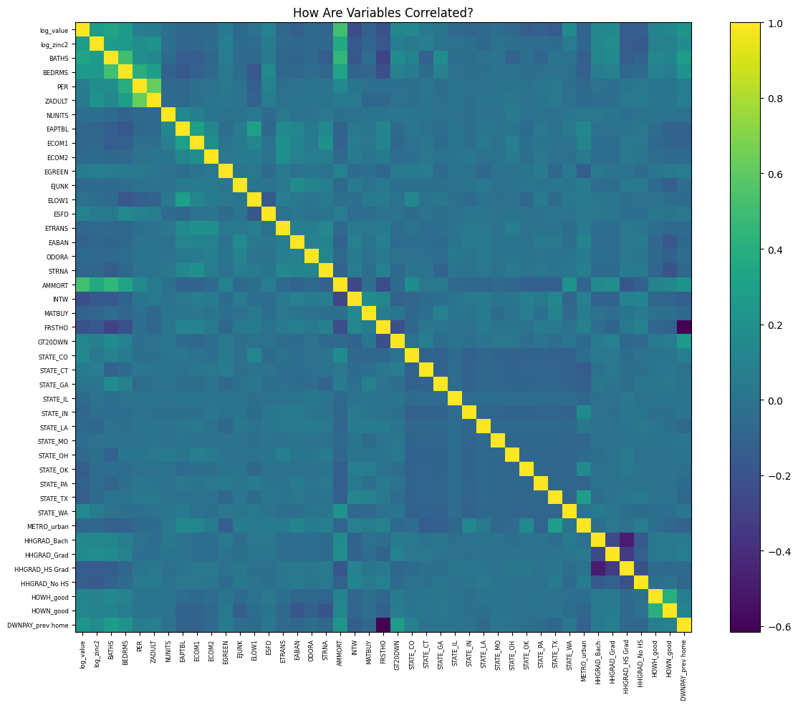
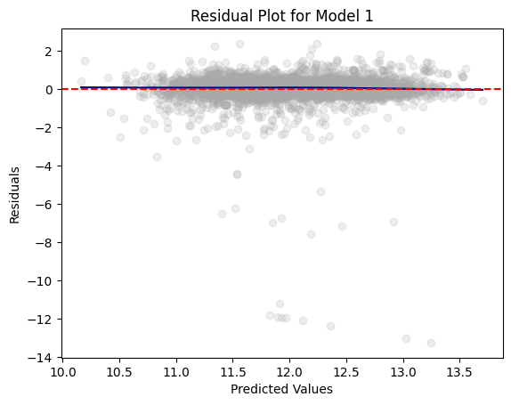
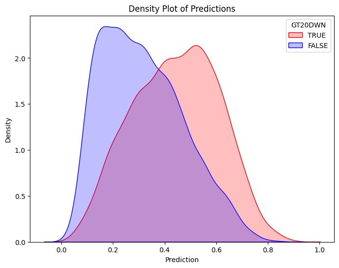
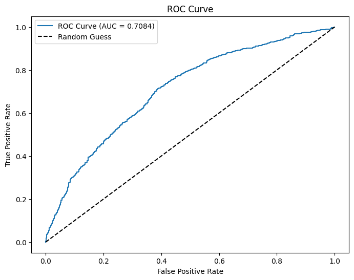
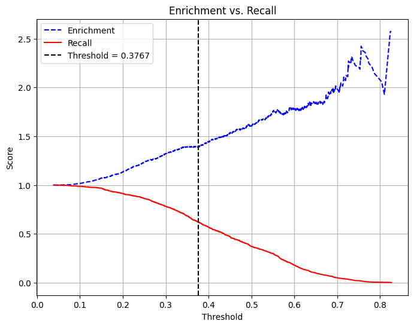
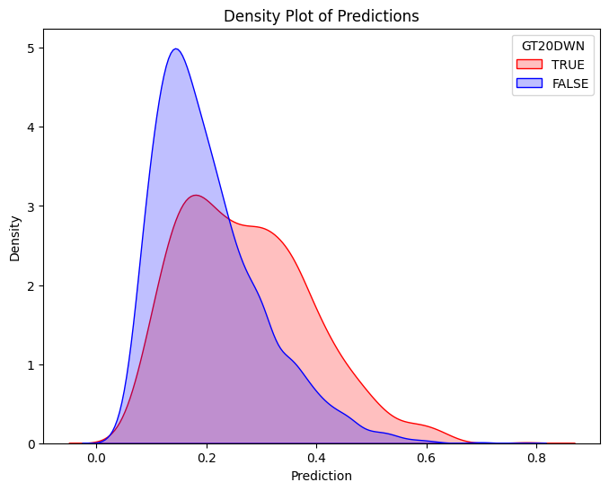
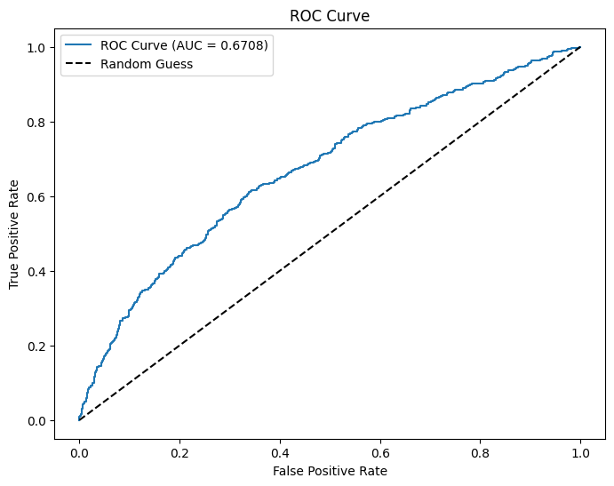
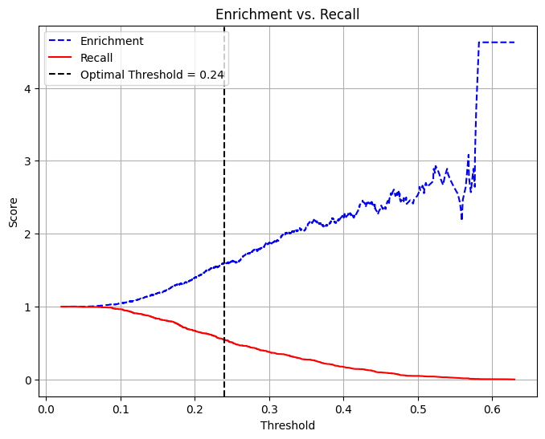

from google.colab import data_table
data_table.enable_dataframe_formatter()
import pandas as pd
import numpy as np
from tabulate import tabulate # for table summary
import scipy.stats as stats
from scipy.stats import norm
import matplotlib.pyplot as plt
import seaborn as sns
import statsmodels.api as sm # for lowess smoothing
from sklearn.metrics import precision_recall_curve
from sklearn.metrics import roc_curve
from pyspark.sql import SparkSession
from pyspark.sql.functions import rand, col, pow, mean, avg, when, log, sqrt, exp
from pyspark.ml.feature import VectorAssembler
from pyspark.ml.regression import LinearRegression, GeneralizedLinearRegression
from pyspark.ml.evaluation import BinaryClassificationEvaluator
spark = SparkSession.builder.master("local[*]").getOrCreate()Homework 3
American Housing Survey 2004
Libraries
UDFs
regression_table()
Code
def regression_table(model, assembler):
"""
Creates a formatted regression table from a fitted LinearRegression model and its VectorAssembler.
If the model’s labelCol (retrieved using getLabelCol()) starts with "log", an extra column showing np.exp(coeff)
is added immediately after the beta estimate column for predictor rows. Additionally, np.exp() of the 95% CI
Lower and Upper bounds is also added unless the predictor's name includes "log_". The Intercept row does not
include exponentiated values.
When labelCol starts with "log", the columns are ordered as:
y: [label] | Beta | Exp(Beta) | Sig. | Std. Error | p-value | 95% CI Lower | 95% CI Upper | Exp(95% CI Lower) | Exp(95% CI Upper)
Otherwise, the columns are:
y: [label] | Beta | Sig. | Std. Error | p-value | 95% CI Lower | 95% CI Upper
Parameters:
model: A fitted LinearRegression model (with a .summary attribute and a labelCol).
assembler: The VectorAssembler used to assemble the features for the model.
Returns:
A formatted string containing the regression table.
"""
# Determine if we should display exponential values for coefficients.
is_log = model.getLabelCol().lower().startswith("log")
# Extract coefficients and standard errors as NumPy arrays.
coeffs = model.coefficients.toArray()
std_errors_all = np.array(model.summary.coefficientStandardErrors)
# Check if the intercept's standard error is included (one extra element).
if len(std_errors_all) == len(coeffs) + 1:
intercept_se = std_errors_all[0]
std_errors = std_errors_all[1:]
else:
intercept_se = None
std_errors = std_errors_all
# Use provided tValues and pValues.
df = model.summary.numInstances - len(coeffs) - 1
t_critical = stats.t.ppf(0.975, df)
p_values = model.summary.pValues
# Helper: significance stars.
def significance_stars(p):
if p < 0.01:
return "***"
elif p < 0.05:
return "**"
elif p < 0.1:
return "*"
else:
return ""
# Build table rows for each feature.
table = []
for feature, beta, se, p in zip(assembler.getInputCols(), coeffs, std_errors, p_values):
ci_lower = beta - t_critical * se
ci_upper = beta + t_critical * se
# Check if predictor contains "log_" to determine if exponentiation should be applied
apply_exp = is_log and "log_" not in feature.lower()
exp_beta = np.exp(beta) if apply_exp else ""
exp_ci_lower = np.exp(ci_lower) if apply_exp else ""
exp_ci_upper = np.exp(ci_upper) if apply_exp else ""
if is_log:
table.append([
feature, # Predictor name
beta, # Beta estimate
exp_beta, # Exponential of beta (or blank)
significance_stars(p),
se,
p,
ci_lower,
ci_upper,
exp_ci_lower, # Exponential of 95% CI lower bound
exp_ci_upper # Exponential of 95% CI upper bound
])
else:
table.append([
feature,
beta,
significance_stars(p),
se,
p,
ci_lower,
ci_upper
])
# Process intercept.
if intercept_se is not None:
intercept_p = model.summary.pValues[0] if model.summary.pValues is not None else None
intercept_sig = significance_stars(intercept_p)
ci_intercept_lower = model.intercept - t_critical * intercept_se
ci_intercept_upper = model.intercept + t_critical * intercept_se
else:
intercept_sig = ""
ci_intercept_lower = ""
ci_intercept_upper = ""
intercept_se = ""
if is_log:
table.append([
"Intercept",
model.intercept,
"", # Removed np.exp(model.intercept)
intercept_sig,
intercept_se,
"",
ci_intercept_lower,
"",
ci_intercept_upper,
""
])
else:
table.append([
"Intercept",
model.intercept,
intercept_sig,
intercept_se,
"",
ci_intercept_lower,
ci_intercept_upper
])
# Append overall model metrics.
if is_log:
table.append(["Observations", model.summary.numInstances, "", "", "", "", "", "", "", ""])
table.append(["R²", model.summary.r2, "", "", "", "", "", "", "", ""])
table.append(["RMSE", model.summary.rootMeanSquaredError, "", "", "", "", "", "", "", ""])
else:
table.append(["Observations", model.summary.numInstances, "", "", "", "", ""])
table.append(["R²", model.summary.r2, "", "", "", "", ""])
table.append(["RMSE", model.summary.rootMeanSquaredError, "", "", "", "", ""])
# Format the table rows.
formatted_table = []
for row in table:
formatted_row = []
for i, item in enumerate(row):
# Format Observations as integer with commas.
if row[0] == "Observations" and i == 1 and isinstance(item, (int, float, np.floating)) and item != "":
formatted_row.append(f"{int(item):,}")
elif isinstance(item, (int, float, np.floating)) and item != "":
if is_log:
# When is_log, the columns are:
# 0: Metric, 1: Beta, 2: Exp(Beta), 3: Sig, 4: Std. Error, 5: p-value,
# 6: 95% CI Lower, 7: 95% CI Upper, 8: Exp(95% CI Lower), 9: Exp(95% CI Upper).
if i in [1, 2, 4, 6, 7, 8, 9]:
formatted_row.append(f"{item:,.3f}")
elif i == 5:
formatted_row.append(f"{item:.3f}")
else:
formatted_row.append(f"{item:.3f}")
else:
# When not is_log, the columns are:
# 0: Metric, 1: Beta, 2: Sig, 3: Std. Error, 4: p-value, 5: 95% CI Lower, 6: 95% CI Upper.
if i in [1, 3, 5, 6]:
formatted_row.append(f"{item:,.3f}")
elif i == 4:
formatted_row.append(f"{item:.3f}")
else:
formatted_row.append(f"{item:.3f}")
else:
formatted_row.append(item)
formatted_table.append(formatted_row)
# Set header and column alignment based on whether label starts with "log"
if is_log:
headers = [
f"y: {model.getLabelCol()}",
"Beta", "Exp(Beta)", "Sig.", "Std. Error", "p-value",
"95% CI Lower", "95% CI Upper", "Exp(95% CI Lower)", "Exp(95% CI Upper)"
]
colalign = ("left", "right", "right", "center", "right", "right", "right", "right", "right", "right")
else:
headers = [f"y: {model.getLabelCol()}", "Beta", "Sig.", "Std. Error", "p-value", "95% CI Lower", "95% CI Upper"]
colalign = ("left", "right", "center", "right", "right", "right", "right")
table_str = tabulate(
formatted_table,
headers=headers,
tablefmt="pretty",
colalign=colalign
)
# Insert a dashed line after the Intercept row.
lines = table_str.split("\n")
dash_line = '-' * len(lines[0])
for i, line in enumerate(lines):
if "Intercept" in line and not line.strip().startswith('+'):
lines.insert(i+1, dash_line)
break
return "\n".join(lines)
# Example usage:
# print(regression_table(model_1, assembler_1))add_dummy_variables()
Code
def add_dummy_variables(var_name, reference_level, category_order=None):
"""
Creates dummy variables for the specified column in the global DataFrames dtrain and dtest.
Allows manual setting of category order.
Parameters:
var_name (str): The name of the categorical column (e.g., "borough_name").
reference_level (int): Index of the category to be used as the reference (dummy omitted).
category_order (list, optional): List of categories in the desired order. If None, categories are sorted.
Returns:
dummy_cols (list): List of dummy column names excluding the reference category.
ref_category (str): The category chosen as the reference.
"""
global dtrain, dtest
# Get distinct categories from the training set.
categories = dtrain.select(var_name).distinct().rdd.flatMap(lambda x: x).collect()
# Convert booleans to strings if present.
categories = [str(c) if isinstance(c, bool) else c for c in categories]
# Use manual category order if provided; otherwise, sort categories.
if category_order:
# Ensure all categories are present in the user-defined order
missing = set(categories) - set(category_order)
if missing:
raise ValueError(f"These categories are missing from your custom order: {missing}")
categories = category_order
else:
categories = sorted(categories)
# Validate reference_level
if reference_level < 0 or reference_level >= len(categories):
raise ValueError(f"reference_level must be between 0 and {len(categories) - 1}")
# Define the reference category
ref_category = categories[reference_level]
print("Reference category (dummy omitted):", ref_category)
# Create dummy variables for all categories
for cat in categories:
dummy_col_name = var_name + "_" + str(cat).replace(" ", "_")
dtrain = dtrain.withColumn(dummy_col_name, when(col(var_name) == cat, 1).otherwise(0))
dtest = dtest.withColumn(dummy_col_name, when(col(var_name) == cat, 1).otherwise(0))
# List of dummy columns, excluding the reference category
dummy_cols = [var_name + "_" + str(cat).replace(" ", "_") for cat in categories if cat != ref_category]
return dummy_cols, ref_category
# Example usage without category_order:
# dummy_cols_year, ref_category_year = add_dummy_variables('year', 0)
# Example usage with category_order:
# custom_order_wkday = ['sunday', 'monday', 'tuesday', 'wednesday', 'thursday', 'friday', 'saturday']
# dummy_cols_wkday, ref_category_wkday = add_dummy_variables('wkday', reference_level=0, category_order = custom_order_wkday)add_interaction_terms()
Code
def add_interaction_terms(var_list1, var_list2, var_list3=None):
"""
Creates interaction term columns in the global DataFrames dtrain and dtest.
For two sets of variable names (which may represent categorical (dummy) or continuous variables),
this function creates two-way interactions by multiplying each variable in var_list1 with each
variable in var_list2.
Optionally, if a third list of variable names (var_list3) is provided, the function also creates
three-way interactions among each variable in var_list1, each variable in var_list2, and each variable
in var_list3.
Parameters:
var_list1 (list): List of column names for the first set of variables.
var_list2 (list): List of column names for the second set of variables.
var_list3 (list, optional): List of column names for the third set of variables for three-way interactions.
Returns:
A flat list of new interaction column names.
"""
global dtrain, dtest
interaction_cols = []
# Create two-way interactions between var_list1 and var_list2.
for var1 in var_list1:
for var2 in var_list2:
col_name = f"{var1}_*_{var2}"
dtrain = dtrain.withColumn(col_name, col(var1).cast("double") * col(var2).cast("double"))
dtest = dtest.withColumn(col_name, col(var1).cast("double") * col(var2).cast("double"))
interaction_cols.append(col_name)
# Create two-way interactions between var_list1 and var_list3.
if var_list3 is not None:
for var1 in var_list1:
for var3 in var_list3:
col_name = f"{var1}_*_{var3}"
dtrain = dtrain.withColumn(col_name, col(var1).cast("double") * col(var3).cast("double"))
dtest = dtest.withColumn(col_name, col(var1).cast("double") * col(var3).cast("double"))
interaction_cols.append(col_name)
# Create two-way interactions between var_list2 and var_list3.
if var_list3 is not None:
for var2 in var_list2:
for var3 in var_list3:
col_name = f"{var2}_*_{var3}"
dtrain = dtrain.withColumn(col_name, col(var2).cast("double") * col(var3).cast("double"))
dtest = dtest.withColumn(col_name, col(var2).cast("double") * col(var3).cast("double"))
interaction_cols.append(col_name)
# If a third list is provided, create three-way interactions.
if var_list3 is not None:
for var1 in var_list1:
for var2 in var_list2:
for var3 in var_list3:
col_name = f"{var1}_*_{var2}_*_{var3}"
dtrain = dtrain.withColumn(col_name, col(var1).cast("double") * col(var2).cast("double") * col(var3).cast("double"))
dtest = dtest.withColumn(col_name, col(var1).cast("double") * col(var2).cast("double") * col(var3).cast("double"))
interaction_cols.append(col_name)
return interaction_cols
# Example
# interaction_cols_brand_price = add_interaction_terms(dummy_cols_brand, ['log_price'])
# interaction_cols_brand_ad_price = add_interaction_terms(dummy_cols_brand, dummy_cols_ad, ['log_price'])compare_reg_models()
Code
def compare_reg_models(models, assemblers, names=None):
"""
Produces a single formatted table comparing multiple regression models.
For each predictor (the union across models, ordered by first appearance), the table shows
the beta estimate (with significance stars) from each model (blank if not used).
For a predictor, if a model's outcome (model.getLabelCol()) starts with "log", the cell displays
both the beta and its exponential (separated by " / "), except when the predictor's name includes "log_".
(The intercept row does not display exp(.))
Additional rows for Intercept, Observations, R², and RMSE are appended.
The header's first column is labeled "Predictor", and subsequent columns are
"y: [outcome] ([name])" for each model.
The table is produced in grid format (with vertical lines). A dashed line (using '-' characters)
is inserted at the top, immediately after the header, and at the bottom.
Additionally, immediately after the Intercept row, the border line is replaced with one using '='
(to appear as, for example, "+==============================================+==========================+...").
Parameters:
models (list): List of fitted LinearRegression models.
assemblers (list): List of corresponding VectorAssembler objects.
names (list, optional): List of model names; defaults to "Model 1", "Model 2", etc.
Returns:
A formatted string containing the combined regression table.
"""
# Default model names.
if names is None:
names = [f"Model {i+1}" for i in range(len(models))]
# For each model, get outcome and determine if that model is log-transformed.
outcomes = [m.getLabelCol() for m in models]
is_log_flags = [out.lower().startswith("log") for out in outcomes]
# Build an ordered union of predictors based on first appearance.
ordered_predictors = []
for assembler in assemblers:
for feat in assembler.getInputCols():
if feat not in ordered_predictors:
ordered_predictors.append(feat)
# Helper for significance stars.
def significance_stars(p):
if p is None:
return ""
if p < 0.01:
return "***"
elif p < 0.05:
return "**"
elif p < 0.1:
return "*"
else:
return ""
# Build rows for each predictor.
rows = []
for feat in ordered_predictors:
row = [feat]
for m, a, is_log in zip(models, assemblers, is_log_flags):
feats_model = a.getInputCols()
if feat in feats_model:
idx = feats_model.index(feat)
beta = m.coefficients.toArray()[idx]
p_val = m.summary.pValues[idx] if m.summary.pValues is not None else None
stars = significance_stars(p_val)
cell = f"{beta:.3f}{stars}"
# Only add exp(beta) if model is log and predictor name does NOT include "log_"
if is_log and ("log_" not in feat.lower()):
cell += f" / {np.exp(beta):,.3f}"
row.append(cell)
else:
row.append("")
rows.append(row)
# Build intercept row (do NOT compute exp(intercept)).
intercept_row = ["Intercept"]
for m in models:
std_all = np.array(m.summary.coefficientStandardErrors)
coeffs = m.coefficients.toArray()
if len(std_all) == len(coeffs) + 1:
intercept_p = m.summary.pValues[0] if m.summary.pValues is not None else None
else:
intercept_p = None
sig = significance_stars(intercept_p)
cell = f"{m.intercept:.3f}{sig}"
intercept_row.append(cell)
rows.append(intercept_row)
# Add Observations row.
obs_row = ["Observations"]
for m in models:
obs = m.summary.numInstances
obs_row.append(f"{int(obs):,}")
rows.append(obs_row)
# Add R² row.
r2_row = ["R²"]
for m in models:
r2_row.append(f"{m.summary.r2:.3f}")
rows.append(r2_row)
# Add RMSE row.
rmse_row = ["RMSE"]
for m in models:
rmse_row.append(f"{m.summary.rootMeanSquaredError:.3f}")
rows.append(rmse_row)
# Build header: first column "Predictor", then for each model: "y: [outcome] ([name])"
header = ["Predictor"]
for out, name in zip(outcomes, names):
header.append(f"y: {out} ({name})")
# Create table string using grid format.
table_str = tabulate(rows, headers=header, tablefmt="grid", colalign=("left",) + ("right",)*len(models))
# Split into lines.
lines = table_str.split("\n")
# Create a dashed line spanning the full width.
full_width = len(lines[0])
dash_line = '-' * full_width
# Create an equals line by replacing '-' with '='.
eq_line = dash_line.replace('-', '=')
# Insert a dashed line after the header row.
lines = table_str.split("\n")
# In grid format, header and separator are usually the first two lines.
lines.insert(2, dash_line)
# Insert an equals line after the Intercept row.
for i, line in enumerate(lines):
if line.startswith("|") and "Intercept" in line:
if i+1 < len(lines):
lines[i+1] = eq_line
break
# Add dashed lines at the very top and bottom.
final_table = dash_line + "\n" + "\n".join(lines) + "\n" + dash_line
return final_table
# Example usage:
# print(compare_reg_models([model_1, model_2, model_3],
# [assembler_1, assembler_2, assembler_3],
# ["Model 1", "Model 2", "Model 3"]))compare_rmse()
Code
def compare_rmse(test_dfs, label_col, pred_col="prediction", names=None):
"""
Computes and compares RMSE values for a list of test DataFrames.
For each DataFrame in test_dfs, this function calculates the RMSE between the actual outcome
(given by label_col) and the predicted value (given by pred_col, default "prediction"). It then
produces a formatted table where the first column header is empty and the first row's first cell is
"RMSE", with each model's RMSE in its own column.
Parameters:
test_dfs (list): List of test DataFrames.
label_col (str): The name of the outcome column.
pred_col (str, optional): The name of the prediction column (default "prediction").
names (list, optional): List of model names corresponding to the test DataFrames.
Defaults to "Model 1", "Model 2", etc.
Returns:
A formatted string containing a table that compares RMSE values for each test DataFrame,
with one model per column.
"""
# Set default model names if none provided.
if names is None:
names = [f"Model {i+1}" for i in range(len(test_dfs))]
rmse_values = []
for df in test_dfs:
# Create a column for squared error.
df = df.withColumn("error_sq", pow(col(label_col) - col(pred_col), 2))
# Calculate RMSE: square root of the mean squared error.
rmse = df.agg(sqrt(avg("error_sq")).alias("rmse")).collect()[0]["rmse"]
rmse_values.append(rmse)
# Build a single row table: first cell "RMSE", then one cell per model with the RMSE value.
row = ["RMSE"] + [f"{rmse:.3f}" for rmse in rmse_values]
# Build header: first column header is empty, then model names.
header = [""] + names
table_str = tabulate([row], headers=header, tablefmt="grid", colalign=("left",) + ("right",)*len(names))
return table_str
# Example usage:
# print(compare_rmse([dtest_1, dtest_2, dtest_3], "log_sales", names=["Model 1", "Model 2", "Model 3"]))residual_plot()
Code
def residual_plot(df, label_col, model_name):
"""
Generates a residual plot for a given test dataframe.
Parameters:
df (DataFrame): Spark DataFrame containing the test set with predictions.
label_col (str): The column name of the actual outcome variable.
title (str): The title for the residual plot.
Returns:
None (displays the plot)
"""
# Convert to Pandas DataFrame
df_pd = df.select(["prediction", label_col]).toPandas()
df_pd["residual"] = df_pd[label_col] - df_pd["prediction"]
# Scatter plot of residuals vs. predicted values
plt.scatter(df_pd["prediction"], df_pd["residual"], alpha=0.2, color="darkgray")
# Use LOWESS smoothing for trend line
smoothed = sm.nonparametric.lowess(df_pd["residual"], df_pd["prediction"])
plt.plot(smoothed[:, 0], smoothed[:, 1], color="darkblue")
# Add reference line at y=0
plt.axhline(y=0, color="red", linestyle="--")
# Labels and title (model_name)
plt.xlabel("Predicted Values")
plt.ylabel("Residuals")
model_name = "Residual Plot for " + model_name
plt.title(model_name)
# Show plot
plt.show()
# Example usage:
# residual_plot(dtest_1, "log_sales", "Model 1")marginal_effects()
Code
def marginal_effects(model, means):
"""
Compute marginal effects for all predictors in a PySpark GeneralizedLinearRegression model (logit)
and return a formatted table with statistical significance and standard errors.
Parameters:
model: Fitted GeneralizedLinearRegression model (with binomial family and logit link).
means: List of mean values for the predictor variables.
Returns:
- A formatted string containing the marginal effects table.
- A Pandas DataFrame with marginal effects, standard errors, confidence intervals, and significance stars.
"""
global assembler_predictors # Use the global assembler_predictors list
# Extract model coefficients, standard errors, and intercept
coeffs = np.array(model.coefficients)
std_errors = np.array(model.summary.coefficientStandardErrors)
intercept = model.intercept
# Compute linear combination of means and coefficients (XB)
XB = np.dot(means, coeffs) + intercept
# Compute derivative of logistic function (G'(XB))
G_prime_XB = np.exp(XB) / ((1 + np.exp(XB)) ** 2)
# Helper: significance stars.
def significance_stars(p):
if p < 0.01:
return "***"
elif p < 0.05:
return "**"
elif p < 0.1:
return "*"
else:
return ""
# Create lists to store results
results = []
df_results = [] # For Pandas DataFrame
for i, predictor in enumerate(assembler_predictors):
# Compute marginal effect
marginal_effect = G_prime_XB * coeffs[i]
# Compute standard error of the marginal effect
std_error = G_prime_XB * std_errors[i]
# Compute z-score and p-value
z_score = marginal_effect / std_error if std_error != 0 else np.nan
p_value = 2 * (1 - norm.cdf(abs(z_score))) if not np.isnan(z_score) else np.nan
# Compute confidence interval (95%)
ci_lower = marginal_effect - 1.96 * std_error
ci_upper = marginal_effect + 1.96 * std_error
# Append results for table formatting
results.append([
predictor,
f"{marginal_effect: .4f}",
significance_stars(p_value),
f"{std_error: .4f}",
f"{ci_lower: .4f}",
f"{ci_upper: .4f}"
])
# Append results for Pandas DataFrame
df_results.append({
"Variable": predictor,
"Marginal Effect": marginal_effect,
"Significance": significance_stars(p_value),
"Std. Error": std_error,
"95% CI Lower": ci_lower,
"95% CI Upper": ci_upper
})
# Convert results to formatted table
table_str = tabulate(results, headers=["Variable", "Marginal Effect", "Significance", "Std. Error", "95% CI Lower", "95% CI Upper"],
tablefmt="pretty", colalign=("left", "decimal", "left", "decimal", "decimal", "decimal"))
# Convert results to Pandas DataFrame
df_results = pd.DataFrame(df_results)
return table_str, df_results
# Example usage:
# means = [0.5, 30] # Mean values for x1 and x2
# assembler_predictors = ['x1', 'x2'] # Define globally before calling the function
# table_output, df_output = marginal_effects(fitted_model, means)
# print(table_output)
# display(df_output)Data
homes = pd.read_csv(
'https://bcdanl.github.io/data/american_housing_survey.csv'
)
homesWarning: Total number of columns (29) exceeds max_columns (20). Falling back to pandas display.| LPRICE | VALUE | STATE | METRO | ZINC2 | HHGRAD | BATHS | BEDRMS | PER | ZADULT | ... | EABAN | HOWH | HOWN | ODORA | STRNA | AMMORT | INTW | MATBUY | DWNPAY | FRSTHO | |
|---|---|---|---|---|---|---|---|---|---|---|---|---|---|---|---|---|---|---|---|---|---|
| 0 | 85000 | 150000 | GA | rural | 15600 | No HS | 2 | 3 | 1 | 1 | ... | 0 | good | good | 0 | 0 | 50000 | 9 | 1 | other | 0 |
| 1 | 76500 | 130000 | GA | rural | 61001 | HS Grad | 2 | 3 | 5 | 2 | ... | 0 | good | bad | 0 | 1 | 70000 | 5 | 1 | other | 1 |
| 2 | 93900 | 135000 | GA | rural | 38700 | HS Grad | 2 | 3 | 4 | 2 | ... | 0 | good | good | 0 | 0 | 117000 | 6 | 0 | other | 1 |
| 3 | 100000 | 140000 | GA | rural | 80000 | No HS | 3 | 4 | 2 | 2 | ... | 0 | good | good | 0 | 1 | 100000 | 7 | 1 | prev home | 0 |
| 4 | 100000 | 135000 | GA | rural | 61000 | HS Grad | 2 | 3 | 2 | 2 | ... | 0 | good | good | 0 | 0 | 100000 | 4 | 1 | other | 1 |
| ... | ... | ... | ... | ... | ... | ... | ... | ... | ... | ... | ... | ... | ... | ... | ... | ... | ... | ... | ... | ... | ... |
| 15560 | 109000 | 200000 | CA | rural | 67000 | HS Grad | 1 | 4 | 5 | 5 | ... | 0 | bad | good | 0 | 0 | 109000 | 8 | 1 | other | 0 |
| 15561 | 105000 | 190000 | CA | rural | 25000 | HS Grad | 2 | 2 | 1 | 1 | ... | 0 | good | bad | 0 | 1 | 105000 | 5 | 1 | other | 1 |
| 15562 | 130000 | 250000 | CA | rural | 48800 | Bach | 2 | 4 | 4 | 2 | ... | 0 | good | good | 0 | 1 | 181000 | 7 | 0 | other | 1 |
| 15563 | 13000 | 250000 | CA | rural | 58005 | No HS | 1 | 2 | 3 | 3 | ... | 0 | bad | good | 0 | 0 | 180000 | 7 | 1 | prev home | 0 |
| 15564 | 68000 | 180000 | CA | rural | 20000 | HS Grad | 0 | 1 | 1 | 1 | ... | 0 | good | good | 0 | 0 | 68000 | 6 | 1 | other | 1 |
15565 rows × 29 columns
homes[['FRSTHO', 'BEDRMS']]| FRSTHO | BEDRMS | |
|---|---|---|
| 0 | 0 | 3 |
| 1 | 1 | 3 |
| 2 | 1 | 3 |
| 3 | 0 | 4 |
| 4 | 1 | 3 |
| ... | ... | ... |
| 15560 | 0 | 4 |
| 15561 | 1 | 2 |
| 15562 | 1 | 4 |
| 15563 | 0 | 2 |
| 15564 | 1 | 1 |
15565 rows × 2 columns
Adding Variables using Pandas
homes['log_value'] = np.log(homes['VALUE'])
homes = homes[homes['ZINC2']>0]
homes['log_zinc2'] = np.log(homes['ZINC2'])
homes['GT20DWN'] = np.where( (homes['LPRICE'] - homes['AMMORT'])/homes['LPRICE'] > .2, 1, 0 )homes.columnsIndex(['LPRICE', 'VALUE', 'STATE', 'METRO', 'ZINC2', 'HHGRAD', 'BATHS',
'BEDRMS', 'PER', 'ZADULT', 'NUNITS', 'EAPTBL', 'ECOM1', 'ECOM2',
'EGREEN', 'EJUNK', 'ELOW1', 'ESFD', 'ETRANS', 'EABAN', 'HOWH', 'HOWN',
'ODORA', 'STRNA', 'AMMORT', 'INTW', 'MATBUY', 'DWNPAY', 'FRSTHO',
'log_value', 'log_zinc2', 'GT20DWN'],
dtype='object')homes = homes[['LPRICE', 'VALUE', 'log_value', 'STATE', 'METRO', 'log_zinc2', 'HHGRAD', 'BATHS',
'BEDRMS', 'PER', 'ZADULT', 'NUNITS', 'EAPTBL', 'ECOM1', 'ECOM2',
'EGREEN', 'EJUNK', 'ELOW1', 'ESFD', 'ETRANS', 'EABAN', 'HOWH', 'HOWN',
'ODORA', 'STRNA', 'AMMORT', 'INTW', 'MATBUY', 'DWNPAY', 'FRSTHO',
'GT20DWN']]homes[['LPRICE', 'AMMORT', 'GT20DWN']]| LPRICE | AMMORT | GT20DWN | |
|---|---|---|---|
| 0 | 85000 | 50000 | 1 |
| 1 | 76500 | 70000 | 0 |
| 2 | 93900 | 117000 | 0 |
| 3 | 100000 | 100000 | 0 |
| 4 | 100000 | 100000 | 0 |
| ... | ... | ... | ... |
| 15560 | 109000 | 109000 | 0 |
| 15561 | 105000 | 105000 | 0 |
| 15562 | 130000 | 181000 | 0 |
| 15563 | 13000 | 180000 | 0 |
| 15564 | 68000 | 68000 | 0 |
15454 rows × 3 columns
homes[['DWNPAY', 'INTW', 'MATBUY']]| DWNPAY | INTW | MATBUY | |
|---|---|---|---|
| 0 | other | 9 | 1 |
| 1 | other | 5 | 1 |
| 2 | other | 6 | 0 |
| 3 | prev home | 7 | 1 |
| 4 | other | 4 | 1 |
| ... | ... | ... | ... |
| 15560 | other | 8 | 1 |
| 15561 | other | 5 | 1 |
| 15562 | other | 7 | 0 |
| 15563 | prev home | 7 | 1 |
| 15564 | other | 6 | 1 |
15454 rows × 3 columns
PySpark DataFrame
df = spark.createDataFrame(homes)Train-Test Split
dtrain, dtest = df.randomSplit([0.7, 0.3], seed = 1234)Adding Dummies
homes.info() # df.printSchema()<class 'pandas.core.frame.DataFrame'>
Index: 15454 entries, 0 to 15564
Data columns (total 31 columns):
# Column Non-Null Count Dtype
--- ------ -------------- -----
0 LPRICE 15454 non-null int64
1 VALUE 15454 non-null int64
2 log_value 15454 non-null float64
3 STATE 15454 non-null object
4 METRO 15454 non-null object
5 log_zinc2 15454 non-null float64
6 HHGRAD 15454 non-null object
7 BATHS 15454 non-null int64
8 BEDRMS 15454 non-null int64
9 PER 15454 non-null int64
10 ZADULT 15454 non-null int64
11 NUNITS 15454 non-null int64
12 EAPTBL 15454 non-null int64
13 ECOM1 15454 non-null int64
14 ECOM2 15454 non-null int64
15 EGREEN 15454 non-null int64
16 EJUNK 15454 non-null int64
17 ELOW1 15454 non-null int64
18 ESFD 15454 non-null int64
19 ETRANS 15454 non-null int64
20 EABAN 15454 non-null int64
21 HOWH 15454 non-null object
22 HOWN 15454 non-null object
23 ODORA 15454 non-null int64
24 STRNA 15454 non-null int64
25 AMMORT 15454 non-null int64
26 INTW 15454 non-null int64
27 MATBUY 15454 non-null int64
28 DWNPAY 15454 non-null object
29 FRSTHO 15454 non-null int64
30 GT20DWN 15454 non-null int64
dtypes: float64(2), int64(23), object(6)
memory usage: 3.8+ MBhomes['STATE'].unique()array(['GA', 'OH', 'CO', 'CT', 'IN', 'LA', 'OK', 'PA', 'TX', 'WA', 'IL',
'MO', 'CA'], dtype=object)homes['METRO'].unique()array(['rural', 'urban'], dtype=object)homes['HHGRAD'].unique()array(['No HS', 'HS Grad', 'Bach', 'Assoc', 'Grad'], dtype=object)homes['HOWH'].unique()array(['good', 'bad'], dtype=object)homes['HOWN'].unique()array(['good', 'bad'], dtype=object)homes['DWNPAY'].unique()array(['other', 'prev home'], dtype=object)dummy_cols_state, ref_category_state = add_dummy_variables('STATE', 0)
dummy_cols_metro, ref_category_metro = add_dummy_variables('METRO', 0)
dummy_cols_hhgrad, ref_category_hhgrad = add_dummy_variables('HHGRAD', 0)
dummy_cols_howh, ref_category_howh = add_dummy_variables('HOWH', 0)
dummy_cols_hown, ref_category_hown = add_dummy_variables('HOWN', 0)
dummy_cols_dwnpay, ref_category_dwnpay = add_dummy_variables('DWNPAY', 0)Reference category (dummy omitted): CA
Reference category (dummy omitted): rural
Reference category (dummy omitted): Assoc
Reference category (dummy omitted): bad
Reference category (dummy omitted): bad
Reference category (dummy omitted): otherAdding Interactions
interaction_cols_FRSTHO_BEDRMS = add_interaction_terms(['FRSTHO'], ['BEDRMS'])interaction_cols_FRSTHO_BEDRMS['FRSTHO_*_BEDRMS']dtrain.printSchema()root
|-- LPRICE: long (nullable = true)
|-- VALUE: long (nullable = true)
|-- log_value: double (nullable = true)
|-- STATE: string (nullable = true)
|-- METRO: string (nullable = true)
|-- log_zinc2: double (nullable = true)
|-- HHGRAD: string (nullable = true)
|-- BATHS: long (nullable = true)
|-- BEDRMS: long (nullable = true)
|-- PER: long (nullable = true)
|-- ZADULT: long (nullable = true)
|-- NUNITS: long (nullable = true)
|-- EAPTBL: long (nullable = true)
|-- ECOM1: long (nullable = true)
|-- ECOM2: long (nullable = true)
|-- EGREEN: long (nullable = true)
|-- EJUNK: long (nullable = true)
|-- ELOW1: long (nullable = true)
|-- ESFD: long (nullable = true)
|-- ETRANS: long (nullable = true)
|-- EABAN: long (nullable = true)
|-- HOWH: string (nullable = true)
|-- HOWN: string (nullable = true)
|-- ODORA: long (nullable = true)
|-- STRNA: long (nullable = true)
|-- AMMORT: long (nullable = true)
|-- INTW: long (nullable = true)
|-- MATBUY: long (nullable = true)
|-- DWNPAY: string (nullable = true)
|-- FRSTHO: long (nullable = true)
|-- GT20DWN: long (nullable = true)
|-- STATE_CA: integer (nullable = false)
|-- STATE_CO: integer (nullable = false)
|-- STATE_CT: integer (nullable = false)
|-- STATE_GA: integer (nullable = false)
|-- STATE_IL: integer (nullable = false)
|-- STATE_IN: integer (nullable = false)
|-- STATE_LA: integer (nullable = false)
|-- STATE_MO: integer (nullable = false)
|-- STATE_OH: integer (nullable = false)
|-- STATE_OK: integer (nullable = false)
|-- STATE_PA: integer (nullable = false)
|-- STATE_TX: integer (nullable = false)
|-- STATE_WA: integer (nullable = false)
|-- METRO_rural: integer (nullable = false)
|-- METRO_urban: integer (nullable = false)
|-- HHGRAD_Assoc: integer (nullable = false)
|-- HHGRAD_Bach: integer (nullable = false)
|-- HHGRAD_Grad: integer (nullable = false)
|-- HHGRAD_HS_Grad: integer (nullable = false)
|-- HHGRAD_No_HS: integer (nullable = false)
|-- HOWH_bad: integer (nullable = false)
|-- HOWH_good: integer (nullable = false)
|-- HOWN_bad: integer (nullable = false)
|-- HOWN_good: integer (nullable = false)
|-- DWNPAY_other: integer (nullable = false)
|-- DWNPAY_prev_home: integer (nullable = false)
|-- FRSTHO_*_BEDRMS: double (nullable = true)
Q1 - Visualization
Correlation Heatmap
df_corr = homes.drop(['LPRICE', 'VALUE'], axis=1)
# Identify categorical columns (object or category dtype)
categorical_cols = df_corr.select_dtypes(include=['object', 'category']).columns.tolist()
# Convert categorical variables to dummies
df_corr = pd.get_dummies(df_corr, columns=categorical_cols, drop_first=True)
# Compute correlation matrix
corr_matrix = df_corr.corr()
# 3. Correlation heatmap using matplotlib
fig, ax = plt.subplots(figsize=(12, 10))
cax = ax.imshow(corr_matrix.values, aspect='auto')
fig.colorbar(cax, ax=ax)
ax.set_xticks(range(len(corr_matrix.columns)))
ax.set_yticks(range(len(corr_matrix.columns)))
ax.set_xticklabels(corr_matrix.columns, rotation=90, fontsize=6)
ax.set_yticklabels(corr_matrix.columns, fontsize=6)
plt.title('How Are Variables Correlated?')
plt.tight_layout()
plt.show()
- The dummy DWNPAY_prev_home (whether a household tapped equity from a prior residence to fund its down payment) is strongly negatively correlated with FRSTHO (the dummy for first-time homebuyers).
- Because first-time buyers have no previous equity, they may fund down payments almost entirely from savings or gifts—the strong negative correlation between DWNPAY_prev_home and FRSTHO.
- Once buyers move into a second home, they can use rolled-over equity from their prior property, lowering their upfront cash requirement.
- The variable AMMORT (the size of the initial mortgage loan taken out when a home was acquired) is strongly positively correlated with BATHS (the count of full bathrooms in the unit)
- Home buyers borrow more to secure properties with extra baths, whether for growing families or simply higher‐end homes.
Q2 - Linear Regression I
df.columns['LPRICE',
'VALUE',
'log_value',
'STATE',
'METRO',
'log_zinc2',
'HHGRAD',
'BATHS',
'BEDRMS',
'PER',
'ZADULT',
'NUNITS',
'EAPTBL',
'ECOM1',
'ECOM2',
'EGREEN',
'EJUNK',
'ELOW1',
'ESFD',
'ETRANS',
'EABAN',
'HOWH',
'HOWN',
'ODORA',
'STRNA',
'AMMORT',
'INTW',
'MATBUY',
'DWNPAY',
'FRSTHO',
'GT20DWN']# assembling predictors
conti_cols = [
'log_zinc2',
'BATHS',
'BEDRMS',
'PER',
'ZADULT',
'NUNITS',
'EAPTBL',
'ECOM1',
'ECOM2',
'EGREEN',
'EJUNK',
'ELOW1',
'ESFD',
'ETRANS',
'EABAN',
'ODORA',
'STRNA',
'INTW',
'MATBUY',
'FRSTHO']
assembler_predictors = (
conti_cols +
dummy_cols_state +
dummy_cols_metro +
dummy_cols_hhgrad +
dummy_cols_howh +
dummy_cols_hown +
dummy_cols_dwnpay
)
assembler_1 = VectorAssembler(
inputCols = assembler_predictors,
outputCol = "predictors"
)
dtrain_1 = assembler_1.transform(dtrain)
dtest_1 = assembler_1.transform(dtest)
# fitting the model
model_1 = (
LinearRegression(featuresCol="predictors",
labelCol="log_value")
.fit(dtrain_1)
)
# making prediction
dtest_1 = model_1.transform(dtest_1)
# makting regression table
print( regression_table(model_1, assembler_1) )+------------------+--------+-----------+------+------------+---------+--------------+--------------+-------------------+-------------------+
| y: log_value | Beta | Exp(Beta) | Sig. | Std. Error | p-value | 95% CI Lower | 95% CI Upper | Exp(95% CI Lower) | Exp(95% CI Upper) |
+------------------+--------+-----------+------+------------+---------+--------------+--------------+-------------------+-------------------+
| log_zinc2 | 0.100 | | *** | 0.014 | 0.000 | 0.072 | 0.128 | | |
| BATHS | 0.200 | 1.221 | *** | 0.012 | 0.000 | 0.175 | 0.224 | 1.192 | 1.251 |
| BEDRMS | 0.079 | 1.082 | *** | 0.008 | 0.000 | 0.064 | 0.094 | 1.066 | 1.099 |
| PER | 0.011 | 1.011 | | 0.013 | 0.136 | -0.015 | 0.038 | 0.985 | 1.038 |
| ZADULT | -0.039 | 0.962 | *** | 0.001 | 0.003 | -0.040 | -0.038 | 0.960 | 0.963 |
| NUNITS | -0.001 | 0.999 | * | 0.029 | 0.051 | -0.057 | 0.055 | 0.944 | 1.056 |
| EAPTBL | -0.047 | 0.954 | | 0.024 | 0.103 | -0.093 | -0.000 | 0.911 | 1.000 |
| ECOM1 | -0.032 | 0.968 | | 0.059 | 0.171 | -0.148 | 0.084 | 0.862 | 1.087 |
| ECOM2 | -0.087 | 0.916 | | 0.017 | 0.140 | -0.121 | -0.054 | 0.886 | 0.948 |
| EGREEN | 0.001 | 1.001 | | 0.063 | 0.956 | -0.122 | 0.123 | 0.886 | 1.131 |
| EJUNK | -0.125 | 0.882 | ** | 0.028 | 0.045 | -0.180 | -0.071 | 0.835 | 0.932 |
| ELOW1 | 0.020 | 1.020 | | 0.036 | 0.477 | -0.051 | 0.090 | 0.951 | 1.094 |
| ESFD | 0.323 | 1.381 | *** | 0.031 | 0.000 | 0.262 | 0.384 | 1.300 | 1.468 |
| ETRANS | -0.028 | 0.972 | | 0.044 | 0.368 | -0.114 | 0.058 | 0.892 | 1.060 |
| EABAN | -0.107 | 0.899 | ** | 0.040 | 0.015 | -0.186 | -0.028 | 0.830 | 0.972 |
| ODORA | 0.036 | 1.036 | | 0.020 | 0.375 | -0.003 | 0.074 | 0.997 | 1.077 |
| STRNA | -0.044 | 0.957 | ** | 0.005 | 0.024 | -0.055 | -0.034 | 0.947 | 0.967 |
| INTW | -0.044 | 0.957 | *** | 0.017 | 0.000 | -0.077 | -0.012 | 0.926 | 0.989 |
| MATBUY | -0.009 | 0.991 | | 0.021 | 0.576 | -0.051 | 0.032 | 0.951 | 1.032 |
| FRSTHO | -0.081 | 0.923 | *** | 0.036 | 0.000 | -0.151 | -0.010 | 0.860 | 0.990 |
| STATE_CO | -0.305 | 0.737 | *** | 0.038 | 0.000 | -0.380 | -0.230 | 0.684 | 0.795 |
| STATE_CT | -0.348 | 0.706 | *** | 0.038 | 0.000 | -0.422 | -0.273 | 0.656 | 0.761 |
| STATE_GA | -0.672 | 0.511 | *** | 0.073 | 0.000 | -0.815 | -0.529 | 0.443 | 0.589 |
| STATE_IL | -0.894 | 0.409 | *** | 0.038 | 0.000 | -0.968 | -0.820 | 0.380 | 0.441 |
| STATE_IN | -0.794 | 0.452 | *** | 0.045 | 0.000 | -0.883 | -0.706 | 0.414 | 0.494 |
| STATE_LA | -0.728 | 0.483 | *** | 0.041 | 0.000 | -0.809 | -0.647 | 0.445 | 0.524 |
| STATE_MO | -0.652 | 0.521 | *** | 0.040 | 0.000 | -0.730 | -0.573 | 0.482 | 0.564 |
| STATE_OH | -0.658 | 0.518 | *** | 0.040 | 0.000 | -0.737 | -0.580 | 0.479 | 0.560 |
| STATE_OK | -1.011 | 0.364 | *** | 0.042 | 0.000 | -1.092 | -0.929 | 0.335 | 0.395 |
| STATE_PA | -0.842 | 0.431 | *** | 0.042 | 0.000 | -0.925 | -0.760 | 0.397 | 0.468 |
| STATE_TX | -1.053 | 0.349 | *** | 0.038 | 0.000 | -1.127 | -0.979 | 0.324 | 0.376 |
| STATE_WA | -0.144 | 0.866 | *** | 0.022 | 0.000 | -0.187 | -0.100 | 0.829 | 0.905 |
| METRO_urban | 0.083 | 1.087 | *** | 0.028 | 0.000 | 0.028 | 0.138 | 1.029 | 1.148 |
| HHGRAD_Bach | 0.134 | 1.143 | *** | 0.032 | 0.000 | 0.072 | 0.196 | 1.074 | 1.216 |
| HHGRAD_Grad | 0.210 | 1.233 | *** | 0.027 | 0.000 | 0.158 | 0.262 | 1.171 | 1.299 |
| HHGRAD_HS_Grad | -0.055 | 0.946 | ** | 0.039 | 0.037 | -0.131 | 0.021 | 0.877 | 1.021 |
| HHGRAD_No_HS | -0.130 | 0.878 | *** | 0.032 | 0.001 | -0.193 | -0.067 | 0.824 | 0.935 |
| HOWH_good | 0.127 | 1.135 | *** | 0.027 | 0.000 | 0.074 | 0.180 | 1.077 | 1.197 |
| HOWN_good | 0.123 | 1.131 | *** | 0.022 | 0.000 | 0.081 | 0.166 | 1.084 | 1.181 |
| DWNPAY_prev_home | 0.127 | 1.135 | *** | 0.126 | 0.000 | -0.120 | 0.374 | 0.887 | 1.453 |
| Intercept | 10.572 | | *** | 0.010 | | 10.553 | | 10.591 | |
---------------------------------------------------------------------------------------------------------------------------------------------
| Observations | 10,869 | | | | | | | | |
| R² | 0.294 | | | | | | | | |
| RMSE | 0.832 | | | | | | | | |
+------------------+--------+-----------+------+------------+---------+--------------+--------------+-------------------+-------------------+Q3 - Linear Regression II
# assembling predictors
conti_cols = [
'log_zinc2',
'BATHS',
'BEDRMS',
'ZADULT',
'NUNITS',
'EJUNK',
'ESFD',
'EABAN',
'STRNA',
'INTW',
'FRSTHO']
assembler_predictors = (
conti_cols +
dummy_cols_state +
dummy_cols_metro +
dummy_cols_hhgrad +
dummy_cols_howh +
dummy_cols_hown +
dummy_cols_dwnpay
)
assembler_2 = VectorAssembler(
inputCols = assembler_predictors,
outputCol = "predictors"
)
dtrain_2 = assembler_2.transform(dtrain)
dtest_2 = assembler_2.transform(dtest)
# training model
model_2 = (
LinearRegression(featuresCol="predictors",
labelCol="log_value")
.fit(dtrain_2)
)
# making prediction
dtest_2 = model_2.transform(dtest_2)
# makting regression table
print( regression_table(model_2, assembler_2) )+------------------+--------+-----------+------+------------+---------+--------------+--------------+-------------------+-------------------+
| y: log_value | Beta | Exp(Beta) | Sig. | Std. Error | p-value | 95% CI Lower | 95% CI Upper | Exp(95% CI Lower) | Exp(95% CI Upper) |
+------------------+--------+-----------+------+------------+---------+--------------+--------------+-------------------+-------------------+
| log_zinc2 | 0.101 | | *** | 0.014 | 0.000 | 0.074 | 0.129 | | |
| BATHS | 0.201 | 1.223 | *** | 0.012 | 0.000 | 0.178 | 0.224 | 1.195 | 1.252 |
| BEDRMS | 0.086 | 1.089 | *** | 0.011 | 0.000 | 0.064 | 0.107 | 1.066 | 1.113 |
| ZADULT | -0.028 | 0.972 | ** | 0.001 | 0.011 | -0.029 | -0.027 | 0.971 | 0.973 |
| NUNITS | -0.001 | 0.999 | ** | 0.062 | 0.020 | -0.124 | 0.121 | 0.884 | 1.128 |
| EJUNK | -0.126 | 0.882 | ** | 0.036 | 0.043 | -0.196 | -0.056 | 0.822 | 0.946 |
| ESFD | 0.324 | 1.382 | *** | 0.044 | 0.000 | 0.238 | 0.409 | 1.269 | 1.506 |
| EABAN | -0.119 | 0.888 | *** | 0.019 | 0.006 | -0.157 | -0.081 | 0.855 | 0.922 |
| STRNA | -0.051 | 0.950 | *** | 0.005 | 0.008 | -0.062 | -0.041 | 0.940 | 0.960 |
| INTW | -0.045 | 0.956 | *** | 0.021 | 0.000 | -0.086 | -0.004 | 0.918 | 0.996 |
| FRSTHO | -0.080 | 0.923 | *** | 0.036 | 0.000 | -0.150 | -0.010 | 0.861 | 0.990 |
| STATE_CO | -0.304 | 0.738 | *** | 0.038 | 0.000 | -0.380 | -0.229 | 0.684 | 0.795 |
| STATE_CT | -0.350 | 0.705 | *** | 0.038 | 0.000 | -0.424 | -0.276 | 0.654 | 0.759 |
| STATE_GA | -0.677 | 0.508 | *** | 0.073 | 0.000 | -0.820 | -0.534 | 0.440 | 0.586 |
| STATE_IL | -0.898 | 0.407 | *** | 0.038 | 0.000 | -0.972 | -0.824 | 0.378 | 0.439 |
| STATE_IN | -0.794 | 0.452 | *** | 0.045 | 0.000 | -0.882 | -0.706 | 0.414 | 0.494 |
| STATE_LA | -0.732 | 0.481 | *** | 0.041 | 0.000 | -0.813 | -0.651 | 0.444 | 0.522 |
| STATE_MO | -0.655 | 0.520 | *** | 0.040 | 0.000 | -0.733 | -0.577 | 0.481 | 0.562 |
| STATE_OH | -0.668 | 0.513 | *** | 0.040 | 0.000 | -0.746 | -0.589 | 0.474 | 0.555 |
| STATE_OK | -1.008 | 0.365 | *** | 0.042 | 0.000 | -1.089 | -0.926 | 0.337 | 0.396 |
| STATE_PA | -0.844 | 0.430 | *** | 0.042 | 0.000 | -0.926 | -0.763 | 0.396 | 0.466 |
| STATE_TX | -1.051 | 0.349 | *** | 0.038 | 0.000 | -1.125 | -0.977 | 0.325 | 0.376 |
| STATE_WA | -0.145 | 0.865 | *** | 0.022 | 0.000 | -0.188 | -0.102 | 0.829 | 0.903 |
| METRO_urban | 0.074 | 1.077 | *** | 0.028 | 0.001 | 0.019 | 0.129 | 1.020 | 1.138 |
| HHGRAD_Bach | 0.134 | 1.143 | *** | 0.032 | 0.000 | 0.072 | 0.196 | 1.074 | 1.216 |
| HHGRAD_Grad | 0.209 | 1.232 | *** | 0.027 | 0.000 | 0.157 | 0.261 | 1.170 | 1.298 |
| HHGRAD_HS_Grad | -0.055 | 0.946 | ** | 0.039 | 0.037 | -0.131 | 0.021 | 0.877 | 1.021 |
| HHGRAD_No_HS | -0.131 | 0.877 | *** | 0.032 | 0.001 | -0.194 | -0.068 | 0.824 | 0.934 |
| HOWH_good | 0.126 | 1.134 | *** | 0.027 | 0.000 | 0.074 | 0.178 | 1.076 | 1.195 |
| HOWN_good | 0.126 | 1.134 | *** | 0.022 | 0.000 | 0.083 | 0.169 | 1.087 | 1.184 |
| DWNPAY_prev_home | 0.130 | 1.139 | *** | 0.124 | 0.000 | -0.113 | 0.373 | 0.893 | 1.452 |
| Intercept | 10.532 | | *** | 0.010 | | 10.514 | | 10.551 | |
---------------------------------------------------------------------------------------------------------------------------------------------
| Observations | 10,869 | | | | | | | | |
| R² | 0.293 | | | | | | | | |
| RMSE | 0.833 | | | | | | | | |
+------------------+--------+-----------+------+------------+---------+--------------+--------------+-------------------+-------------------+print(compare_reg_models([model_1, model_2],
[assembler_1, assembler_2],
["Model 1", "Model 2"]))--------------------------------------------------------------------------
+------------------+--------------------------+--------------------------+
| Predictor | y: log_value (Model 1) | y: log_value (Model 2) |
--------------------------------------------------------------------------
+==================+==========================+==========================+
| log_zinc2 | 0.100*** | 0.101*** |
+------------------+--------------------------+--------------------------+
| BATHS | 0.200*** / 1.221 | 0.201*** / 1.223 |
+------------------+--------------------------+--------------------------+
| BEDRMS | 0.079*** / 1.082 | 0.086*** / 1.089 |
+------------------+--------------------------+--------------------------+
| PER | 0.011 / 1.011 | |
+------------------+--------------------------+--------------------------+
| ZADULT | -0.039*** / 0.962 | -0.028** / 0.972 |
+------------------+--------------------------+--------------------------+
| NUNITS | -0.001* / 0.999 | -0.001** / 0.999 |
+------------------+--------------------------+--------------------------+
| EAPTBL | -0.047 / 0.954 | |
+------------------+--------------------------+--------------------------+
| ECOM1 | -0.032 / 0.968 | |
+------------------+--------------------------+--------------------------+
| ECOM2 | -0.087 / 0.916 | |
+------------------+--------------------------+--------------------------+
| EGREEN | 0.001 / 1.001 | |
+------------------+--------------------------+--------------------------+
| EJUNK | -0.125** / 0.882 | -0.126** / 0.882 |
+------------------+--------------------------+--------------------------+
| ELOW1 | 0.020 / 1.020 | |
+------------------+--------------------------+--------------------------+
| ESFD | 0.323*** / 1.381 | 0.324*** / 1.382 |
+------------------+--------------------------+--------------------------+
| ETRANS | -0.028 / 0.972 | |
+------------------+--------------------------+--------------------------+
| EABAN | -0.107** / 0.899 | -0.119*** / 0.888 |
+------------------+--------------------------+--------------------------+
| ODORA | 0.036 / 1.036 | |
+------------------+--------------------------+--------------------------+
| STRNA | -0.044** / 0.957 | -0.051*** / 0.950 |
+------------------+--------------------------+--------------------------+
| INTW | -0.044*** / 0.957 | -0.045*** / 0.956 |
+------------------+--------------------------+--------------------------+
| MATBUY | -0.009 / 0.991 | |
+------------------+--------------------------+--------------------------+
| FRSTHO | -0.081*** / 0.923 | -0.080*** / 0.923 |
+------------------+--------------------------+--------------------------+
| STATE_CO | -0.305*** / 0.737 | -0.304*** / 0.738 |
+------------------+--------------------------+--------------------------+
| STATE_CT | -0.348*** / 0.706 | -0.350*** / 0.705 |
+------------------+--------------------------+--------------------------+
| STATE_GA | -0.672*** / 0.511 | -0.677*** / 0.508 |
+------------------+--------------------------+--------------------------+
| STATE_IL | -0.894*** / 0.409 | -0.898*** / 0.407 |
+------------------+--------------------------+--------------------------+
| STATE_IN | -0.794*** / 0.452 | -0.794*** / 0.452 |
+------------------+--------------------------+--------------------------+
| STATE_LA | -0.728*** / 0.483 | -0.732*** / 0.481 |
+------------------+--------------------------+--------------------------+
| STATE_MO | -0.652*** / 0.521 | -0.655*** / 0.520 |
+------------------+--------------------------+--------------------------+
| STATE_OH | -0.658*** / 0.518 | -0.668*** / 0.513 |
+------------------+--------------------------+--------------------------+
| STATE_OK | -1.011*** / 0.364 | -1.008*** / 0.365 |
+------------------+--------------------------+--------------------------+
| STATE_PA | -0.842*** / 0.431 | -0.844*** / 0.430 |
+------------------+--------------------------+--------------------------+
| STATE_TX | -1.053*** / 0.349 | -1.051*** / 0.349 |
+------------------+--------------------------+--------------------------+
| STATE_WA | -0.144*** / 0.866 | -0.145*** / 0.865 |
+------------------+--------------------------+--------------------------+
| METRO_urban | 0.083*** / 1.087 | 0.074*** / 1.077 |
+------------------+--------------------------+--------------------------+
| HHGRAD_Bach | 0.134*** / 1.143 | 0.134*** / 1.143 |
+------------------+--------------------------+--------------------------+
| HHGRAD_Grad | 0.210*** / 1.233 | 0.209*** / 1.232 |
+------------------+--------------------------+--------------------------+
| HHGRAD_HS_Grad | -0.055** / 0.946 | -0.055** / 0.946 |
+------------------+--------------------------+--------------------------+
| HHGRAD_No_HS | -0.130*** / 0.878 | -0.131*** / 0.877 |
+------------------+--------------------------+--------------------------+
| HOWH_good | 0.127*** / 1.135 | 0.126*** / 1.134 |
+------------------+--------------------------+--------------------------+
| HOWN_good | 0.123*** / 1.131 | 0.126*** / 1.134 |
+------------------+--------------------------+--------------------------+
| DWNPAY_prev_home | 0.127*** / 1.135 | 0.130*** / 1.139 |
+------------------+--------------------------+--------------------------+
| Intercept | 10.572*** | 10.532*** |
==========================================================================
| Observations | 10,869 | 10,869 |
+------------------+--------------------------+--------------------------+
| R² | 0.294 | 0.293 |
+------------------+--------------------------+--------------------------+
| RMSE | 0.832 | 0.833 |
+------------------+--------------------------+--------------------------+
--------------------------------------------------------------------------residual_plot(dtest_1, "log_value", "Model 1")
residual_plot(dtest_2, "log_value", "Model 2")Q4 - Logistic Regression - I
# assembling predictors
conti_cols = [
'log_zinc2',
'BATHS',
'BEDRMS',
'PER',
'ZADULT',
'NUNITS',
'EAPTBL',
'ECOM1',
'ECOM2',
'EGREEN',
'EJUNK',
'ELOW1',
'ESFD',
'ETRANS',
'EABAN',
'ODORA',
'STRNA',
'INTW',
'MATBUY',
'FRSTHO']
assembler_predictors = (
conti_cols +
dummy_cols_state +
dummy_cols_metro +
dummy_cols_hhgrad +
dummy_cols_howh +
dummy_cols_hown +
dummy_cols_dwnpay
)
assembler_3 = VectorAssembler(
inputCols = assembler_predictors,
outputCol = "predictors"
)
dtrain_3 = assembler_3.transform(dtrain)
dtest_3 = assembler_3.transform(dtest)
# training the model
model_3 = (
GeneralizedLinearRegression(featuresCol="predictors",
labelCol="GT20DWN",
family="binomial",
link="logit")
.fit(dtrain_3)
)
# making prediction
dtrain_3 = model_3.transform(dtrain_3)
dtest_3 = model_3.transform(dtest_3)
# makting regression table
model_3.summaryCoefficients:
Feature Estimate Std Error T Value P Value
(Intercept) -0.3965 0.3491 -1.1358 0.2560
log_zinc2 -0.0647 0.0263 -2.4572 0.0140
BATHS 0.3836 0.0395 9.7098 0.0000
BEDRMS 0.0310 0.0346 0.8954 0.3706
PER -0.1092 0.0221 -4.9522 0.0000
ZADULT 0.0064 0.0383 0.1673 0.8672
NUNITS 0.0028 0.0017 1.5797 0.1142
EAPTBL -0.0445 0.0859 -0.5181 0.6044
ECOM1 -0.1851 0.0707 -2.6196 0.0088
ECOM2 -0.1670 0.1908 -0.8756 0.3813
EGREEN -0.0072 0.0478 -0.1512 0.8798
EJUNK 0.0799 0.1938 0.4125 0.6800
ELOW1 0.0153 0.0798 0.1913 0.8483
ESFD -0.2195 0.0996 -2.2027 0.0276
ETRANS -0.1033 0.0926 -1.1153 0.2647
EABAN -0.0629 0.1406 -0.4477 0.6544
ODORA 0.1368 0.1176 1.1629 0.2449
STRNA -0.1670 0.0574 -2.9076 0.0036
INTW -0.0915 0.0166 -5.5077 0.0000
MATBUY 0.2764 0.0472 5.8552 0.0000
FRSTHO -0.4728 0.0622 -7.6055 0.0000
STATE_CO -0.2293 0.1009 -2.2729 0.0230
STATE_CT 0.6353 0.1050 6.0529 0.0000
STATE_GA -0.5510 0.1099 -5.0146 0.0000
STATE_IL 0.2934 0.2008 1.4611 0.1440
STATE_IN -0.0048 0.1069 -0.0451 0.9640
STATE_LA 0.3375 0.1247 2.7065 0.0068
STATE_MO 0.2289 0.1141 2.0059 0.0449
STATE_OH 0.4700 0.1100 4.2723 0.0000
STATE_OK -0.2453 0.1170 -2.0971 0.0360
STATE_PA 0.3136 0.1164 2.6944 0.0071
STATE_TX -0.0706 0.1216 -0.5807 0.5614
STATE_WA 0.1421 0.1044 1.3611 0.1735
METRO_urban -0.0678 0.0653 -1.0378 0.2994
HHGRAD_Bach 0.2034 0.0792 2.5674 0.0102
HHGRAD_Grad 0.3891 0.0873 4.4560 0.0000
HHGRAD_HS_Grad -0.0580 0.0768 -0.7545 0.4505
HHGRAD_No_HS -0.0939 0.1180 -0.7961 0.4260
HOWH_good -0.1434 0.0960 -1.4949 0.1349
HOWN_good 0.2085 0.0817 2.5533 0.0107
DWNPAY_prev_home 0.7493 0.0578 12.9532 0.0000
(Dispersion parameter for binomial family taken to be 1.0000)
Null deviance: 13055.3691 on 10828 degrees of freedom
Residual deviance: 11731.1943 on 10828 degrees of freedom
AIC: 11813.1943Marginal Effects
# Compute means
means_df = dtrain_3.select([mean(col).alias(col) for col in assembler_predictors])
# Collect the results as a list
means = means_df.collect()[0]
means_list = [means[col] for col in assembler_predictors]
table_output, df_ME = marginal_effects(model_3, means_list) # Instead of mean values, some other representative values can also be chosen.
print(table_output)+------------------+-----------------+--------------+------------+--------------+--------------+
| Variable | Marginal Effect | Significance | Std. Error | 95% CI Lower | 95% CI Upper |
+------------------+-----------------+--------------+------------+--------------+--------------+
| log_zinc2 | -0.0125 | ** | 0.0051 | -0.0225 | -0.0025 |
| BATHS | 0.0742 | *** | 0.0076 | 0.0592 | 0.0892 |
| BEDRMS | 0.0060 | | 0.0067 | -0.0071 | 0.0191 |
| PER | -0.0211 | *** | 0.0043 | -0.0295 | -0.0128 |
| ZADULT | 0.0012 | | 0.0074 | -0.0133 | 0.0158 |
| NUNITS | 0.0005 | | 0.0003 | -0.0001 | 0.0012 |
| EAPTBL | -0.0086 | | 0.0166 | -0.0412 | 0.0240 |
| ECOM1 | -0.0358 | *** | 0.0137 | -0.0626 | -0.0090 |
| ECOM2 | -0.0323 | | 0.0369 | -0.1046 | 0.0400 |
| EGREEN | -0.0014 | | 0.0093 | -0.0195 | 0.0167 |
| EJUNK | 0.0155 | | 0.0375 | -0.0580 | 0.0889 |
| ELOW1 | 0.0030 | | 0.0154 | -0.0273 | 0.0332 |
| ESFD | -0.0424 | ** | 0.0193 | -0.0802 | -0.0047 |
| ETRANS | -0.0200 | | 0.0179 | -0.0551 | 0.0151 |
| EABAN | -0.0122 | | 0.0272 | -0.0655 | 0.0411 |
| ODORA | 0.0264 | | 0.0227 | -0.0181 | 0.0710 |
| STRNA | -0.0323 | *** | 0.0111 | -0.0541 | -0.0105 |
| INTW | -0.0177 | *** | 0.0032 | -0.0240 | -0.0114 |
| MATBUY | 0.0535 | *** | 0.0091 | 0.0356 | 0.0713 |
| FRSTHO | -0.0914 | *** | 0.0120 | -0.1150 | -0.0679 |
| STATE_CO | -0.0443 | ** | 0.0195 | -0.0826 | -0.0061 |
| STATE_CT | 0.1229 | *** | 0.0203 | 0.0831 | 0.1627 |
| STATE_GA | -0.1065 | *** | 0.0212 | -0.1482 | -0.0649 |
| STATE_IL | 0.0567 | | 0.0388 | -0.0194 | 0.1328 |
| STATE_IN | -0.0009 | | 0.0207 | -0.0415 | 0.0396 |
| STATE_LA | 0.0653 | *** | 0.0241 | 0.0180 | 0.1125 |
| STATE_MO | 0.0443 | ** | 0.0221 | 0.0010 | 0.0875 |
| STATE_OH | 0.0909 | *** | 0.0213 | 0.0492 | 0.1326 |
| STATE_OK | -0.0474 | ** | 0.0226 | -0.0918 | -0.0031 |
| STATE_PA | 0.0606 | *** | 0.0225 | 0.0165 | 0.1048 |
| STATE_TX | -0.0137 | | 0.0235 | -0.0597 | 0.0324 |
| STATE_WA | 0.0275 | | 0.0202 | -0.0121 | 0.0671 |
| METRO_urban | -0.0131 | | 0.0126 | -0.0378 | 0.0116 |
| HHGRAD_Bach | 0.0393 | ** | 0.0153 | 0.0093 | 0.0694 |
| HHGRAD_Grad | 0.0753 | *** | 0.0169 | 0.0422 | 0.1084 |
| HHGRAD_HS_Grad | -0.0112 | | 0.0149 | -0.0403 | 0.0179 |
| HHGRAD_No_HS | -0.0182 | | 0.0228 | -0.0629 | 0.0265 |
| HOWH_good | -0.0277 | | 0.0186 | -0.0641 | 0.0086 |
| HOWN_good | 0.0403 | ** | 0.0158 | 0.0094 | 0.0713 |
| DWNPAY_prev_home | 0.1449 | *** | 0.0112 | 0.1230 | 0.1668 |
+------------------+-----------------+--------------+------------+--------------+--------------+Q5 - Logistic Regression II
# assembling predictors
conti_cols = [
'log_zinc2',
'BATHS',
'BEDRMS',
'PER',
'ZADULT',
'NUNITS',
'EAPTBL',
'ECOM1',
'ECOM2',
'EGREEN',
'EJUNK',
'ELOW1',
'ESFD',
'ETRANS',
'EABAN',
'ODORA',
'STRNA',
'INTW',
'MATBUY',
'FRSTHO']
assembler_predictors = (
conti_cols +
dummy_cols_state +
dummy_cols_metro +
dummy_cols_hhgrad +
dummy_cols_howh +
dummy_cols_hown +
dummy_cols_dwnpay +
interaction_cols_FRSTHO_BEDRMS
)
assembler_4 = VectorAssembler(
inputCols = assembler_predictors,
outputCol = "predictors"
)
dtrain_4 = assembler_4.transform(dtrain)
dtest_4 = assembler_4.transform(dtest)
# training the model
model_4 = (
GeneralizedLinearRegression(featuresCol="predictors",
labelCol="GT20DWN",
family="binomial",
link="logit")
.fit(dtrain_4)
)
# making prediction
dtrain_4 = model_4.transform(dtrain_4)
dtest_4 = model_4.transform(dtest_4)
# makting regression table
model_4.summaryCoefficients:
Feature Estimate Std Error T Value P Value
(Intercept) -0.4319 0.3520 -1.2270 0.2198
log_zinc2 -0.0652 0.0263 -2.4769 0.0133
BATHS 0.3817 0.0396 9.6396 0.0000
BEDRMS 0.0451 0.0390 1.1561 0.2477
PER -0.1096 0.0221 -4.9650 0.0000
ZADULT 0.0071 0.0383 0.1845 0.8536
NUNITS 0.0027 0.0017 1.5682 0.1168
EAPTBL -0.0458 0.0859 -0.5337 0.5935
ECOM1 -0.1858 0.0707 -2.6301 0.0085
ECOM2 -0.1673 0.1907 -0.8777 0.3801
EGREEN -0.0076 0.0478 -0.1587 0.8739
EJUNK 0.0797 0.1937 0.4115 0.6807
ELOW1 0.0149 0.0797 0.1871 0.8516
ESFD -0.2197 0.0996 -2.2068 0.0273
ETRANS -0.1032 0.0926 -1.1142 0.2652
EABAN -0.0634 0.1405 -0.4515 0.6516
ODORA 0.1347 0.1176 1.1458 0.2519
STRNA -0.1666 0.0574 -2.9000 0.0037
INTW -0.0916 0.0166 -5.5117 0.0000
MATBUY 0.2762 0.0472 5.8492 0.0000
FRSTHO -0.3225 0.2010 -1.6046 0.1086
STATE_CO -0.2316 0.1010 -2.2943 0.0218
STATE_CT 0.6338 0.1050 6.0366 0.0000
STATE_GA -0.5525 0.1099 -5.0249 0.0000
STATE_IL 0.2911 0.2008 1.4498 0.1471
STATE_IN -0.0057 0.1070 -0.0533 0.9575
STATE_LA 0.3365 0.1247 2.6984 0.0070
STATE_MO 0.2267 0.1142 1.9863 0.0470
STATE_OH 0.4691 0.1100 4.2629 0.0000
STATE_OK -0.2458 0.1170 -2.1011 0.0356
STATE_PA 0.3118 0.1164 2.6786 0.0074
STATE_TX -0.0704 0.1216 -0.5786 0.5628
STATE_WA 0.1411 0.1044 1.3508 0.1768
METRO_urban -0.0688 0.0653 -1.0542 0.2918
HHGRAD_Bach 0.2021 0.0792 2.5502 0.0108
HHGRAD_Grad 0.3881 0.0873 4.4439 0.0000
HHGRAD_HS_Grad -0.0578 0.0768 -0.7529 0.4515
HHGRAD_No_HS -0.0939 0.1179 -0.7959 0.4261
HOWH_good -0.1418 0.0959 -1.4785 0.1393
HOWN_good 0.2080 0.0817 2.5474 0.0109
DWNPAY_prev_home 0.7472 0.0579 12.9013 0.0000
FRSTHO_*_BEDRMS -0.0483 0.0614 -0.7857 0.4320
(Dispersion parameter for binomial family taken to be 1.0000)
Null deviance: 13055.3691 on 10827 degrees of freedom
Residual deviance: 11730.5760 on 10827 degrees of freedom
AIC: 11814.5760Marginal Effects
# Compute means
means_df = dtrain_4.select([mean(col).alias(col) for col in assembler_predictors])
# Collect the results as a list
means = means_df.collect()[0]
means_list = [means[col] for col in assembler_predictors]
table_output, df_ME = marginal_effects(model_4, means_list) # Instead of mean values, some other representative values can also be chosen.
print(table_output)+------------------+-----------------+--------------+------------+--------------+--------------+
| Variable | Marginal Effect | Significance | Std. Error | 95% CI Lower | 95% CI Upper |
+------------------+-----------------+--------------+------------+--------------+--------------+
| log_zinc2 | -0.0126 | ** | 0.0051 | -0.0226 | -0.0026 |
| BATHS | 0.0738 | *** | 0.0077 | 0.0588 | 0.0888 |
| BEDRMS | 0.0087 | | 0.0075 | -0.0061 | 0.0235 |
| PER | -0.0212 | *** | 0.0043 | -0.0296 | -0.0128 |
| ZADULT | 0.0014 | | 0.0074 | -0.0132 | 0.0159 |
| NUNITS | 0.0005 | | 0.0003 | -0.0001 | 0.0012 |
| EAPTBL | -0.0089 | | 0.0166 | -0.0414 | 0.0237 |
| ECOM1 | -0.0359 | *** | 0.0137 | -0.0627 | -0.0092 |
| ECOM2 | -0.0324 | | 0.0369 | -0.1046 | 0.0399 |
| EGREEN | -0.0015 | | 0.0093 | -0.0196 | 0.0167 |
| EJUNK | 0.0154 | | 0.0375 | -0.0580 | 0.0889 |
| ELOW1 | 0.0029 | | 0.0154 | -0.0273 | 0.0331 |
| ESFD | -0.0425 | ** | 0.0193 | -0.0802 | -0.0048 |
| ETRANS | -0.0200 | | 0.0179 | -0.0551 | 0.0151 |
| EABAN | -0.0123 | | 0.0272 | -0.0655 | 0.0410 |
| ODORA | 0.0261 | | 0.0227 | -0.0185 | 0.0706 |
| STRNA | -0.0322 | *** | 0.0111 | -0.0540 | -0.0104 |
| INTW | -0.0177 | *** | 0.0032 | -0.0240 | -0.0114 |
| MATBUY | 0.0534 | *** | 0.0091 | 0.0355 | 0.0713 |
| FRSTHO | -0.0624 | | 0.0389 | -0.1385 | 0.0138 |
| STATE_CO | -0.0448 | ** | 0.0195 | -0.0831 | -0.0065 |
| STATE_CT | 0.1226 | *** | 0.0203 | 0.0828 | 0.1624 |
| STATE_GA | -0.1068 | *** | 0.0213 | -0.1485 | -0.0652 |
| STATE_IL | 0.0563 | | 0.0388 | -0.0198 | 0.1324 |
| STATE_IN | -0.0011 | | 0.0207 | -0.0417 | 0.0394 |
| STATE_LA | 0.0651 | *** | 0.0241 | 0.0178 | 0.1124 |
| STATE_MO | 0.0439 | ** | 0.0221 | 0.0006 | 0.0871 |
| STATE_OH | 0.0907 | *** | 0.0213 | 0.0490 | 0.1324 |
| STATE_OK | -0.0475 | ** | 0.0226 | -0.0919 | -0.0032 |
| STATE_PA | 0.0603 | *** | 0.0225 | 0.0162 | 0.1044 |
| STATE_TX | -0.0136 | | 0.0235 | -0.0597 | 0.0325 |
| STATE_WA | 0.0273 | | 0.0202 | -0.0123 | 0.0669 |
| METRO_urban | -0.0133 | | 0.0126 | -0.0381 | 0.0114 |
| HHGRAD_Bach | 0.0391 | ** | 0.0153 | 0.0090 | 0.0691 |
| HHGRAD_Grad | 0.0751 | *** | 0.0169 | 0.0420 | 0.1082 |
| HHGRAD_HS_Grad | -0.0112 | | 0.0149 | -0.0403 | 0.0179 |
| HHGRAD_No_HS | -0.0182 | | 0.0228 | -0.0629 | 0.0266 |
| HOWH_good | -0.0274 | | 0.0186 | -0.0638 | 0.0089 |
| HOWN_good | 0.0402 | ** | 0.0158 | 0.0093 | 0.0712 |
| DWNPAY_prev_home | 0.1445 | *** | 0.0112 | 0.1225 | 0.1665 |
| FRSTHO_*_BEDRMS | -0.0093 | | 0.0119 | -0.0326 | 0.0140 |
+------------------+-----------------+--------------+------------+--------------+--------------+Q6 - Logistic Regression with Sub-samples
Over 175k Value
# df = spark.createDataFrame(homes)
df = df.filter(col("VALUE") >= 175000)
dtrain, dtest = df.randomSplit([0.7, 0.3], seed = 1234)
dummy_cols_state, ref_category_state = add_dummy_variables('STATE', 0)
dummy_cols_metro, ref_category_metro = add_dummy_variables('METRO', 0)
dummy_cols_hhgrad, ref_category_hhgrad = add_dummy_variables('HHGRAD', 0)
dummy_cols_howh, ref_category_howh = add_dummy_variables('HOWH', 0)
dummy_cols_hown, ref_category_hown = add_dummy_variables('HOWN', 0)
dummy_cols_dwnpay, ref_category_dwnpay = add_dummy_variables('DWNPAY', 0)Reference category (dummy omitted): CA
Reference category (dummy omitted): rural
Reference category (dummy omitted): Assoc
Reference category (dummy omitted): bad
Reference category (dummy omitted): bad
Reference category (dummy omitted): other# assembling predictors
conti_cols = [
'log_zinc2',
'BATHS',
'BEDRMS',
'PER',
'ZADULT',
'NUNITS',
'EAPTBL',
'ECOM1',
'ECOM2',
'EGREEN',
'EJUNK',
'ELOW1',
'ESFD',
'ETRANS',
'EABAN',
'ODORA',
'STRNA',
'INTW',
'MATBUY',
'FRSTHO']
assembler_predictors = (
conti_cols +
dummy_cols_state +
dummy_cols_metro +
dummy_cols_hhgrad +
dummy_cols_howh +
dummy_cols_hown +
dummy_cols_dwnpay
)
assembler_5 = VectorAssembler(
inputCols = assembler_predictors,
outputCol = "predictors"
)
dtrain_5 = assembler_5.transform(dtrain)
dtest_5 = assembler_5.transform(dtest)
# training the model
model_5 = (
GeneralizedLinearRegression(featuresCol="predictors",
labelCol="GT20DWN",
family="binomial",
link="logit")
.fit(dtrain_5)
)
# making prediction
dtrain_5 = model_5.transform(dtrain_5)
dtest_5 = model_5.transform(dtest_5)
# makting regression table
model_5.summaryCoefficients:
Feature Estimate Std Error T Value P Value
(Intercept) -0.9444 0.4785 -1.9736 0.0484
log_zinc2 -0.0414 0.0341 -1.2147 0.2245
BATHS 0.3740 0.0488 7.6637 0.0000
BEDRMS -0.0106 0.0448 -0.2366 0.8130
PER -0.0848 0.0285 -2.9738 0.0029
ZADULT -0.0055 0.0504 -0.1097 0.9126
NUNITS 0.0003 0.0053 0.0629 0.9498
EAPTBL 0.1634 0.1285 1.2720 0.2034
ECOM1 0.0229 0.1008 0.2270 0.8204
ECOM2 -0.3561 0.3508 -1.0151 0.3100
EGREEN 0.0111 0.0625 0.1771 0.8594
EJUNK -0.3499 0.3340 -1.0478 0.2947
ELOW1 -0.0640 0.1113 -0.5753 0.5651
ESFD -0.2295 0.1661 -1.3821 0.1670
ETRANS -0.1628 0.1377 -1.1824 0.2371
EABAN -0.4304 0.2659 -1.6187 0.1055
ODORA 0.3021 0.1704 1.7735 0.0761
STRNA -0.2275 0.0815 -2.7911 0.0053
INTW -0.0823 0.0259 -3.1832 0.0015
MATBUY 0.5120 0.0619 8.2768 0.0000
FRSTHO -0.4224 0.0910 -4.6425 0.0000
STATE_CO -0.1388 0.1055 -1.3151 0.1885
STATE_CT 0.6874 0.1167 5.8879 0.0000
STATE_GA -0.3892 0.1298 -2.9974 0.0027
STATE_IL 0.1701 0.3273 0.5199 0.6031
STATE_IN 0.1883 0.1450 1.2984 0.1941
STATE_LA 0.7247 0.1839 3.9407 0.0001
STATE_MO 0.5225 0.1440 3.6286 0.0003
STATE_OH 0.7060 0.1502 4.7010 0.0000
STATE_OK 0.2419 0.1920 1.2598 0.2077
STATE_PA 0.6531 0.1790 3.6481 0.0003
STATE_TX 0.2097 0.2249 0.9323 0.3512
STATE_WA 0.0200 0.1117 0.1792 0.8578
METRO_urban -0.0247 0.0936 -0.2639 0.7918
HHGRAD_Bach 0.2805 0.1079 2.5987 0.0094
HHGRAD_Grad 0.3803 0.1151 3.3050 0.0009
HHGRAD_HS_Grad 0.0370 0.1096 0.3371 0.7360
HHGRAD_No_HS -0.1526 0.1968 -0.7754 0.4381
HOWH_good -0.1439 0.1509 -0.9532 0.3405
HOWN_good 0.3543 0.1234 2.8711 0.0041
DWNPAY_prev_home 0.7196 0.0751 9.5884 0.0000
(Dispersion parameter for binomial family taken to be 1.0000)
Null deviance: 7217.9381 on 5475 degrees of freedom
Residual deviance: 6487.1260 on 5475 degrees of freedom
AIC: 6569.1260Marginal Effects
# Compute means
means_df = dtrain_5.select([mean(col).alias(col) for col in assembler_predictors])
# Collect the results as a list
means = means_df.collect()[0]
means_list = [means[col] for col in assembler_predictors]
table_output, df_ME = marginal_effects(model_5, means_list) # Instead of mean values, some other representative values can also be chosen.
print(table_output)+------------------+-----------------+--------------+------------+--------------+--------------+
| Variable | Marginal Effect | Significance | Std. Error | 95% CI Lower | 95% CI Upper |
+------------------+-----------------+--------------+------------+--------------+--------------+
| log_zinc2 | -0.0093 | | 0.0077 | -0.0243 | 0.0057 |
| BATHS | 0.0840 | *** | 0.0110 | 0.0625 | 0.1054 |
| BEDRMS | -0.0024 | | 0.0101 | -0.0221 | 0.0173 |
| PER | -0.0190 | *** | 0.0064 | -0.0316 | -0.0065 |
| ZADULT | -0.0012 | | 0.0113 | -0.0234 | 0.0210 |
| NUNITS | 0.0001 | | 0.0012 | -0.0023 | 0.0024 |
| EAPTBL | 0.0367 | | 0.0288 | -0.0198 | 0.0932 |
| ECOM1 | 0.0051 | | 0.0226 | -0.0392 | 0.0495 |
| ECOM2 | -0.0799 | | 0.0788 | -0.2343 | 0.0744 |
| EGREEN | 0.0025 | | 0.0140 | -0.0250 | 0.0300 |
| EJUNK | -0.0786 | | 0.0750 | -0.2255 | 0.0684 |
| ELOW1 | -0.0144 | | 0.0250 | -0.0634 | 0.0346 |
| ESFD | -0.0515 | | 0.0373 | -0.1246 | 0.0215 |
| ETRANS | -0.0366 | | 0.0309 | -0.0972 | 0.0240 |
| EABAN | -0.0966 | | 0.0597 | -0.2137 | 0.0204 |
| ODORA | 0.0678 | * | 0.0382 | -0.0071 | 0.1428 |
| STRNA | -0.0511 | *** | 0.0183 | -0.0869 | -0.0152 |
| INTW | -0.0185 | *** | 0.0058 | -0.0299 | -0.0071 |
| MATBUY | 0.1150 | *** | 0.0139 | 0.0877 | 0.1422 |
| FRSTHO | -0.0948 | *** | 0.0204 | -0.1349 | -0.0548 |
| STATE_CO | -0.0312 | | 0.0237 | -0.0776 | 0.0153 |
| STATE_CT | 0.1543 | *** | 0.0262 | 0.1030 | 0.2057 |
| STATE_GA | -0.0874 | *** | 0.0292 | -0.1445 | -0.0302 |
| STATE_IL | 0.0382 | | 0.0735 | -0.1058 | 0.1822 |
| STATE_IN | 0.0423 | | 0.0326 | -0.0215 | 0.1061 |
| STATE_LA | 0.1627 | *** | 0.0413 | 0.0818 | 0.2436 |
| STATE_MO | 0.1173 | *** | 0.0323 | 0.0539 | 0.1807 |
| STATE_OH | 0.1585 | *** | 0.0337 | 0.0924 | 0.2246 |
| STATE_OK | 0.0543 | | 0.0431 | -0.0302 | 0.1388 |
| STATE_PA | 0.1466 | *** | 0.0402 | 0.0678 | 0.2254 |
| STATE_TX | 0.0471 | | 0.0505 | -0.0519 | 0.1460 |
| STATE_WA | 0.0045 | | 0.0251 | -0.0447 | 0.0536 |
| METRO_urban | -0.0055 | | 0.0210 | -0.0468 | 0.0357 |
| HHGRAD_Bach | 0.0630 | *** | 0.0242 | 0.0155 | 0.1105 |
| HHGRAD_Grad | 0.0854 | *** | 0.0258 | 0.0347 | 0.1360 |
| HHGRAD_HS_Grad | 0.0083 | | 0.0246 | -0.0400 | 0.0565 |
| HHGRAD_No_HS | -0.0343 | | 0.0442 | -0.1209 | 0.0523 |
| HOWH_good | -0.0323 | | 0.0339 | -0.0987 | 0.0341 |
| HOWN_good | 0.0796 | *** | 0.0277 | 0.0252 | 0.1339 |
| DWNPAY_prev_home | 0.1616 | *** | 0.0169 | 0.1285 | 0.1946 |
+------------------+-----------------+--------------+------------+--------------+--------------+Classification
# Filter training data for atRisk == 1 and atRisk == 0
pdf = dtrain_5.select("prediction", "GT20DWN").toPandas()
train_true = pdf[pdf["GT20DWN"] == 1]
train_false = pdf[pdf["GT20DWN"] == 0]
# Create the first density plot
plt.figure(figsize=(8, 6))
sns.kdeplot(train_true["prediction"], label="TRUE", color="red", fill=True)
sns.kdeplot(train_false["prediction"], label="FALSE", color="blue", fill=True)
plt.xlabel("Prediction")
plt.ylabel("Density")
plt.title("Density Plot of Predictions")
plt.legend(title="GT20DWN")
plt.show()
# Define threshold for vertical line
threshold = 0.3767 # Replace with actual value
# Create the second density plot with vertical line
plt.figure(figsize=(8, 6))
sns.kdeplot(train_true["prediction"], label="TRUE", color="red", fill=True)
sns.kdeplot(train_false["prediction"], label="FALSE", color="blue", fill=True)
plt.axvline(x=threshold, color="blue", linestyle="dashed", label=f"Threshold = {threshold}")
plt.xlabel("Prediction")
plt.ylabel("Density")
plt.title("Density Plot of Predictions with Threshold")
plt.legend(title="GT20DWN")
plt.show()# Compute confusion matrix
dtest_5 = dtest_5.withColumn("predicted_class", when(col("prediction") > .3767, 1).otherwise(0))
conf_matrix = dtest_5.groupBy("GT20DWN", "predicted_class").count().orderBy("GT20DWN", "predicted_class")
TP = dtest_5.filter((col("GT20DWN") == 1) & (col("predicted_class") == 1)).count()
FP = dtest_5.filter((col("GT20DWN") == 0) & (col("predicted_class") == 1)).count()
FN = dtest_5.filter((col("GT20DWN") == 1) & (col("predicted_class") == 0)).count()
TN = dtest_5.filter((col("GT20DWN") == 0) & (col("predicted_class") == 0)).count()
accuracy = (TP + TN) / (TP + FP + FN + TN)
precision = TP / (TP + FP)
recall = TP / (TP + FN)
specificity = TN / (TN + FP)
average_rate = (TP + FN) / (TP + TN + FP + FN) # Proportion of actual at-risk babies
enrichment = precision / average_rate
# Print formatted confusion matrix with labels
print("\n Confusion Matrix:\n")
print(" Predicted")
print(" | Negative | Positive ")
print("------------+------------+------------")
print(f"Actual Neg. | {TN:5} | {FP:5} |")
print("------------+------------+------------")
print(f"Actual Pos. | {FN:5} | {TP:5} |")
print("------------+------------+------------")
print(f"Accuracy: {accuracy:.4f}")
print(f"Precision: {precision:.4f}")
print(f"Recall (Sensitivity): {recall:.4f}")
print(f"Specificity: {specificity:.4f}")
print(f"Average Rate: {average_rate:.4f}")
print(f"Enrichment: {enrichment:.4f} (Relative Precision)")
Confusion Matrix:
Predicted
| Negative | Positive
------------+------------+------------
Actual Neg. | 919 | 460 |
------------+------------+------------
Actual Pos. | 333 | 544 |
------------+------------+------------
Accuracy: 0.6485
Precision: 0.5418
Recall (Sensitivity): 0.6203
Specificity: 0.6664
Average Rate: 0.3887
Enrichment: 1.3938 (Relative Precision)# Use probability of the positive class (y=1)
evaluator = BinaryClassificationEvaluator(labelCol="GT20DWN", rawPredictionCol="prediction", metricName="areaUnderROC")
# Evaluate AUC
auc = evaluator.evaluate(dtest_5)
print(f"AUC: {auc:.4f}") # Higher is better (closer to 1)
# Convert to Pandas
pdf = dtest_5.select("prediction", "GT20DWN").toPandas()
# Compute ROC curve
fpr, tpr, _ = roc_curve(pdf["GT20DWN"], pdf["prediction"])
# Plot ROC curve
plt.figure(figsize=(8,6))
plt.plot(fpr, tpr, label=f"ROC Curve (AUC = {auc:.4f})")
plt.plot([0, 1], [0, 1], 'k--', label="Random Guess")
plt.xlabel("False Positive Rate")
plt.ylabel("True Positive Rate")
plt.title("ROC Curve")
plt.legend()
plt.show()AUC: 0.7084
pdf = dtest_5.select("prediction", "GT20DWN").toPandas()
# Extract predictions and true labels
y_true = pdf["GT20DWN"] # True labels
y_scores = pdf["prediction"] # Predicted probabilities
# Compute precision, recall, and thresholds
precision_plot, recall_plot, thresholds = precision_recall_curve(y_true, y_scores)
# Compute enrichment: precision divided by average at-risk rate
average_rate = np.mean(y_true)
enrichment_plot = precision_plot / average_rate
# Define optimal threshold (example: threshold where recall ≈ enrichment balance)
threshold = 0.3767 # Adjust based on the plot
# Plot Enrichment vs. Recall vs. Threshold
plt.figure(figsize=(8, 6))
plt.plot(thresholds, enrichment_plot[:-1], label="Enrichment", color="blue", linestyle="--")
plt.plot(thresholds, recall_plot[:-1], label="Recall", color="red", linestyle="-")
# Add vertical line for chosen threshold
plt.axvline(x=threshold, color="black", linestyle="dashed", label=f"Threshold = {threshold}")
# Labels and legend
plt.xlabel("Threshold")
plt.ylabel("Score")
plt.title("Enrichment vs. Recall")
plt.legend()
plt.grid(True)
plt.show()
Under 175k Value
df = spark.createDataFrame(homes)
df = df.filter(col("VALUE") < 175000)
dtrain, dtest = df.randomSplit([0.7, 0.3], seed = 1234)
dummy_cols_state, ref_category_state = add_dummy_variables('STATE', 0)
dummy_cols_metro, ref_category_metro = add_dummy_variables('METRO', 0)
dummy_cols_hhgrad, ref_category_hhgrad = add_dummy_variables('HHGRAD', 0)
dummy_cols_howh, ref_category_howh = add_dummy_variables('HOWH', 0)
dummy_cols_hown, ref_category_hown = add_dummy_variables('HOWN', 0)
dummy_cols_dwnpay, ref_category_dwnpay = add_dummy_variables('DWNPAY', 0)Reference category (dummy omitted): CA
Reference category (dummy omitted): rural
Reference category (dummy omitted): Assoc
Reference category (dummy omitted): bad
Reference category (dummy omitted): bad
Reference category (dummy omitted): other# assembling predictors
conti_cols = [
'log_zinc2',
'BATHS',
'BEDRMS',
'PER',
'ZADULT',
'NUNITS',
'EAPTBL',
'ECOM1',
'ECOM2',
'EGREEN',
'EJUNK',
'ELOW1',
'ESFD',
'ETRANS',
'EABAN',
'ODORA',
'STRNA',
'INTW',
'MATBUY',
'FRSTHO']
assembler_predictors = (
conti_cols +
dummy_cols_state +
dummy_cols_metro +
dummy_cols_hhgrad +
dummy_cols_howh +
dummy_cols_hown +
dummy_cols_dwnpay
)
assembler_6 = VectorAssembler(
inputCols = assembler_predictors,
outputCol = "predictors"
)
dtrain_6 = assembler_6.transform(dtrain)
dtest_6 = assembler_6.transform(dtest)
# training the model
model_6 = (
GeneralizedLinearRegression(featuresCol="predictors",
labelCol="GT20DWN",
family="binomial",
link="logit")
.fit(dtrain_6)
)
# making prediction
dtrain_6 = model_6.transform(dtrain_6)
dtest_6 = model_6.transform(dtest_6)
# makting regression table
model_6.summaryCoefficients:
Feature Estimate Std Error T Value P Value
(Intercept) 1.5459 0.5823 2.6546 0.0079
log_zinc2 -0.1247 0.0417 -2.9944 0.0028
BATHS 0.1486 0.0696 2.1349 0.0328
BEDRMS 0.0110 0.0560 0.1961 0.8445
PER -0.1603 0.0357 -4.4872 0.0000
ZADULT 0.0811 0.0591 1.3720 0.1701
NUNITS 0.0022 0.0016 1.3485 0.1775
EAPTBL 0.0289 0.1099 0.2633 0.7923
ECOM1 -0.3379 0.0977 -3.4595 0.0005
ECOM2 -0.1490 0.2234 -0.6667 0.5049
EGREEN -0.0439 0.0745 -0.5890 0.5559
EJUNK -0.1720 0.2479 -0.6937 0.4879
ELOW1 0.0458 0.1164 0.3931 0.6942
ESFD -0.2187 0.1301 -1.6815 0.0927
ETRANS 0.0740 0.1189 0.6222 0.5338
EABAN -0.0901 0.1612 -0.5589 0.5762
ODORA 0.0859 0.1574 0.5456 0.5853
STRNA -0.0301 0.0806 -0.3735 0.7088
INTW -0.0624 0.0210 -2.9746 0.0029
MATBUY -0.1199 0.0715 -1.6767 0.0936
FRSTHO -0.3768 0.0855 -4.4051 0.0000
STATE_CO -1.2002 0.3436 -3.4926 0.0005
STATE_CT -0.1410 0.3118 -0.4521 0.6512
STATE_GA -1.1278 0.3107 -3.6294 0.0003
STATE_IL -0.3090 0.3513 -0.8796 0.3791
STATE_IN -0.8464 0.3008 -2.8141 0.0049
STATE_LA -0.4525 0.3103 -1.4584 0.1447
STATE_MO -0.7814 0.3110 -2.5126 0.0120
STATE_OH -0.2886 0.3031 -0.9522 0.3410
STATE_OK -0.9326 0.3027 -3.0812 0.0021
STATE_PA -0.5283 0.3044 -1.7353 0.0827
STATE_TX -0.7327 0.3051 -2.4015 0.0163
STATE_WA -0.5304 0.3546 -1.4956 0.1348
METRO_urban -0.1059 0.0910 -1.1632 0.2448
HHGRAD_Bach 0.1352 0.1175 1.1498 0.2502
HHGRAD_Grad 0.2345 0.1399 1.6755 0.0938
HHGRAD_HS_Grad -0.0571 0.1057 -0.5399 0.5892
HHGRAD_No_HS -0.2540 0.1541 -1.6478 0.0994
HOWH_good -0.1156 0.1226 -0.9430 0.3457
HOWN_good 0.1000 0.1057 0.9456 0.3444
DWNPAY_prev_home 0.6405 0.0939 6.8220 0.0000
(Dispersion parameter for binomial family taken to be 1.0000)
Null deviance: 5724.5375 on 5407 degrees of freedom
Residual deviance: 5372.3945 on 5407 degrees of freedom
AIC: 5454.3945Marginal Effects
# Compute means
means_df = dtrain_6.select([mean(col).alias(col) for col in assembler_predictors])
# Collect the results as a list
means = means_df.collect()[0]
means_list = [means[col] for col in assembler_predictors]
table_output, df_ME = marginal_effects(model_6, means_list) # Instead of mean values, some other representative values can also be chosen.
print(table_output)+------------------+-----------------+--------------+------------+--------------+--------------+
| Variable | Marginal Effect | Significance | Std. Error | 95% CI Lower | 95% CI Upper |
+------------------+-----------------+--------------+------------+--------------+--------------+
| log_zinc2 | -0.0201 | *** | 0.0067 | -0.0332 | -0.0069 |
| BATHS | 0.0239 | ** | 0.0112 | 0.0020 | 0.0458 |
| BEDRMS | 0.0018 | | 0.0090 | -0.0159 | 0.0194 |
| PER | -0.0258 | *** | 0.0057 | -0.0370 | -0.0145 |
| ZADULT | 0.0130 | | 0.0095 | -0.0056 | 0.0317 |
| NUNITS | 0.0004 | | 0.0003 | -0.0002 | 0.0009 |
| EAPTBL | 0.0047 | | 0.0177 | -0.0300 | 0.0393 |
| ECOM1 | -0.0543 | *** | 0.0157 | -0.0851 | -0.0235 |
| ECOM2 | -0.0239 | | 0.0359 | -0.0944 | 0.0465 |
| EGREEN | -0.0071 | | 0.0120 | -0.0305 | 0.0164 |
| EJUNK | -0.0276 | | 0.0399 | -0.1058 | 0.0505 |
| ELOW1 | 0.0074 | | 0.0187 | -0.0293 | 0.0440 |
| ESFD | -0.0352 | * | 0.0209 | -0.0762 | 0.0058 |
| ETRANS | 0.0119 | | 0.0191 | -0.0256 | 0.0494 |
| EABAN | -0.0145 | | 0.0259 | -0.0653 | 0.0363 |
| ODORA | 0.0138 | | 0.0253 | -0.0358 | 0.0634 |
| STRNA | -0.0048 | | 0.0130 | -0.0302 | 0.0206 |
| INTW | -0.0100 | *** | 0.0034 | -0.0167 | -0.0034 |
| MATBUY | -0.0193 | * | 0.0115 | -0.0418 | 0.0033 |
| FRSTHO | -0.0606 | *** | 0.0138 | -0.0875 | -0.0336 |
| STATE_CO | -0.1930 | *** | 0.0552 | -0.3012 | -0.0847 |
| STATE_CT | -0.0227 | | 0.0501 | -0.1209 | 0.0756 |
| STATE_GA | -0.1813 | *** | 0.0500 | -0.2792 | -0.0834 |
| STATE_IL | -0.0497 | | 0.0565 | -0.1604 | 0.0610 |
| STATE_IN | -0.1361 | *** | 0.0484 | -0.2309 | -0.0413 |
| STATE_LA | -0.0728 | | 0.0499 | -0.1705 | 0.0250 |
| STATE_MO | -0.1256 | ** | 0.0500 | -0.2236 | -0.0276 |
| STATE_OH | -0.0464 | | 0.0487 | -0.1419 | 0.0491 |
| STATE_OK | -0.1499 | *** | 0.0487 | -0.2453 | -0.0546 |
| STATE_PA | -0.0849 | * | 0.0489 | -0.1809 | 0.0110 |
| STATE_TX | -0.1178 | ** | 0.0491 | -0.2139 | -0.0217 |
| STATE_WA | -0.0853 | | 0.0570 | -0.1970 | 0.0265 |
| METRO_urban | -0.0170 | | 0.0146 | -0.0457 | 0.0117 |
| HHGRAD_Bach | 0.0217 | | 0.0189 | -0.0153 | 0.0588 |
| HHGRAD_Grad | 0.0377 | * | 0.0225 | -0.0064 | 0.0818 |
| HHGRAD_HS_Grad | -0.0092 | | 0.0170 | -0.0425 | 0.0241 |
| HHGRAD_No_HS | -0.0408 | * | 0.0248 | -0.0894 | 0.0077 |
| HOWH_good | -0.0186 | | 0.0197 | -0.0572 | 0.0200 |
| HOWN_good | 0.0161 | | 0.0170 | -0.0172 | 0.0494 |
| DWNPAY_prev_home | 0.1030 | *** | 0.0151 | 0.0734 | 0.1326 |
+------------------+-----------------+--------------+------------+--------------+--------------+Classification
# Filter training data for atRisk == 1 and atRisk == 0
pdf = dtrain_6.select("prediction", "GT20DWN").toPandas()
train_true = pdf[pdf["GT20DWN"] == 1]
train_false = pdf[pdf["GT20DWN"] == 0]
# Create the first density plot
plt.figure(figsize=(8, 6))
sns.kdeplot(train_true["prediction"], label="TRUE", color="red", fill=True)
sns.kdeplot(train_false["prediction"], label="FALSE", color="blue", fill=True)
plt.xlabel("Prediction")
plt.ylabel("Density")
plt.title("Density Plot of Predictions")
plt.legend(title="GT20DWN")
plt.show()
# Define threshold for vertical line
threshold = 0.24 # Replace with actual value
# Create the second density plot with vertical line
plt.figure(figsize=(8, 6))
sns.kdeplot(train_true["prediction"], label="TRUE", color="red", fill=True)
sns.kdeplot(train_false["prediction"], label="FALSE", color="blue", fill=True)
plt.axvline(x=threshold, color="blue", linestyle="dashed", label=f"Threshold = {threshold}")
plt.xlabel("Prediction")
plt.ylabel("Density")
plt.title("Density Plot of Predictions with Threshold")
plt.legend(title="GT20DWN")
plt.show()# Compute confusion matrix
dtest_6 = dtest_6.withColumn("predicted_class", when(col("prediction") > .24, 1).otherwise(0))
conf_matrix = dtest_6.groupBy("GT20DWN", "predicted_class").count().orderBy("GT20DWN", "predicted_class")
TP = dtest_6.filter((col("GT20DWN") == 1) & (col("predicted_class") == 1)).count()
FP = dtest_6.filter((col("GT20DWN") == 0) & (col("predicted_class") == 1)).count()
FN = dtest_6.filter((col("GT20DWN") == 1) & (col("predicted_class") == 0)).count()
TN = dtest_6.filter((col("GT20DWN") == 0) & (col("predicted_class") == 0)).count()
accuracy = (TP + TN) / (TP + FP + FN + TN)
precision = TP / (TP + FP)
recall = TP / (TP + FN)
specificity = TN / (TN + FP)
average_rate = (TP + FN) / (TP + TN + FP + FN) # Proportion of actual at-risk babies
enrichment = precision / average_rate
# Print formatted confusion matrix with labels
print("\n Confusion Matrix:\n")
print(" Predicted")
print(" | Negative | Positive ")
print("------------+------------+------------")
print(f"Actual Neg. | {TN:5} | {FP:5} |")
print("------------+------------+------------")
print(f"Actual Pos. | {FN:5} | {TP:5} |")
print("------------+------------+------------")
print(f"Accuracy: {accuracy:.4f}")
print(f"Precision: {precision:.4f}")
print(f"Recall (Sensitivity): {recall:.4f}")
print(f"Specificity: {specificity:.4f}")
print(f"Average Rate: {average_rate:.4f}")
print(f"Enrichment: {enrichment:.4f} (Relative Precision)")
Confusion Matrix:
Predicted
| Negative | Positive
------------+------------+------------
Actual Neg. | 1248 | 503 |
------------+------------+------------
Actual Pos. | 218 | 265 |
------------+------------+------------
Accuracy: 0.6773
Precision: 0.3451
Recall (Sensitivity): 0.5487
Specificity: 0.7127
Average Rate: 0.2162
Enrichment: 1.5960 (Relative Precision)# Use probability of the positive class (y=1)
evaluator = BinaryClassificationEvaluator(labelCol="GT20DWN", rawPredictionCol="prediction", metricName="areaUnderROC")
# Evaluate AUC
auc = evaluator.evaluate(dtest_6)
print(f"AUC: {auc:.4f}") # Higher is better (closer to 1)
# Convert to Pandas
pdf = dtest_6.select("prediction", "GT20DWN").toPandas()
# Compute ROC curve
fpr, tpr, _ = roc_curve(pdf["GT20DWN"], pdf["prediction"])
# Plot ROC curve
plt.figure(figsize=(8,6))
plt.plot(fpr, tpr, label=f"ROC Curve (AUC = {auc:.4f})")
plt.plot([0, 1], [0, 1], 'k--', label="Random Guess")
plt.xlabel("False Positive Rate")
plt.ylabel("True Positive Rate")
plt.title("ROC Curve")
plt.legend()
plt.show()AUC: 0.6708
pdf = dtest_6.select("prediction", "GT20DWN").toPandas()
# Extract predictions and true labels
y_true = pdf["GT20DWN"] # True labels
y_scores = pdf["prediction"] # Predicted probabilities
# Compute precision, recall, and thresholds
precision_plot, recall_plot, thresholds = precision_recall_curve(y_true, y_scores)
# Compute enrichment: precision divided by average at-risk rate
average_rate = np.mean(y_true)
enrichment_plot = precision_plot / average_rate
# Define optimal threshold (example: threshold where recall ≈ enrichment balance)
threshold = 0.24 # Adjust based on the plot
# Plot Enrichment vs. Recall vs. Threshold
plt.figure(figsize=(8, 6))
plt.plot(thresholds, enrichment_plot[:-1], label="Enrichment", color="blue", linestyle="--")
plt.plot(thresholds, recall_plot[:-1], label="Recall", color="red", linestyle="-")
# Add vertical line for chosen threshold
plt.axvline(x=threshold, color="black", linestyle="dashed", label=f"Optimal Threshold = {threshold}")
# Labels and legend
plt.xlabel("Threshold")
plt.ylabel("Score")
plt.title("Enrichment vs. Recall")
plt.legend()
plt.grid(True)
plt.show()
Comparison
Residual Deviance
- Over 175k Value
- Residual deviance: 6487.1260 on 5475 degrees of freedom
- Under 175k Value
- Residual deviance: 5372.3945 on 5407 degrees of freedom
Marginal Effects
| Variable | Marginal Effect (Over 175k) | Significance (Over 175k) | Marginal Effect (Under 175k) | Significance (Under 175k) |
|---|---|---|---|---|
| log_zinc2 | -0.0093 | -0.0201 | *** | |
| BATHS | 0.0840 | *** | 0.0239 | ** |
| BEDRMS | -0.0024 | 0.0018 | ||
| PER | -0.0190 | *** | -0.0258 | *** |
| ZADULT | -0.0012 | 0.0130 | ||
| NUNITS | 0.0001 | 0.0004 | ||
| EAPTBL | 0.0367 | 0.0047 | ||
| ECOM1 | 0.0051 | -0.0543 | *** | |
| ECOM2 | -0.0799 | -0.0239 | ||
| EGREEN | 0.0025 | -0.0071 | ||
| EJUNK | -0.0786 | -0.0276 | ||
| ELOW1 | -0.0144 | 0.0074 | ||
| ESFD | -0.0515 | -0.0352 | * | |
| ETRANS | -0.0366 | 0.0119 | ||
| EABAN | -0.0966 | -0.0145 | ||
| ODORA | 0.0678 | * | 0.0138 | |
| STRNA | -0.0511 | *** | -0.0048 | |
| INTW | -0.0185 | *** | -0.0100 | *** |
| MATBUY | 0.1150 | *** | -0.0193 | * |
| FRSTHO | -0.0948 | *** | -0.0606 | *** |
| STATE_CO | -0.0312 | -0.1930 | *** | |
| STATE_CT | 0.1543 | *** | -0.0227 | |
| STATE_GA | -0.0874 | *** | -0.1813 | *** |
| STATE_IL | 0.0382 | -0.0497 | ||
| STATE_IN | 0.0423 | -0.1361 | *** | |
| STATE_LA | 0.1627 | *** | -0.0728 | |
| STATE_MO | 0.1173 | *** | -0.1256 | ** |
| STATE_OH | 0.1585 | *** | -0.0464 | |
| STATE_OK | 0.0543 | -0.1499 | *** | |
| STATE_PA | 0.1466 | *** | -0.0849 | * |
| STATE_TX | 0.0471 | -0.1178 | ** | |
| STATE_WA | 0.0045 | -0.0853 | ||
| METRO_urban | -0.0055 | -0.0170 | ||
| HHGRAD_Bach | 0.0630 | *** | 0.0217 | |
| HHGRAD_Grad | 0.0854 | *** | 0.0377 | * |
| HHGRAD_HS_Grad | 0.0083 | -0.0092 | ||
| HHGRAD_No_HS | -0.0343 | -0.0408 | * | |
| HOWH_good | -0.0323 | -0.0186 | ||
| HOWN_good | 0.0796 | *** | 0.0161 | |
| DWNPAY_prev_home | 0.1616 | *** | 0.1030 | *** |
Classification
Thresholds Used
- Over $175k: 0.3767
- Under $175k: 0.24
| Metric | Over 175k | Under 175k |
|---|---|---|
| Accuracy | 0.6485 | 0.6773 |
| Precision | 0.5418 | 0.3451 |
| Recall (Sensitivity) | 0.6203 | 0.5487 |
| Specificity | 0.6664 | 0.7127 |
| Average Rate | 0.3887 | 0.2162 |
| Enrichment (Rel. Precision) |
1.3938 | 1.5960 |
| AUC | 0.7084 | 0.6708 |
Choosing the Right Threshold
The thresholds used in our two samples were initially chosen to give clean separation in density plots of the model’s predicted probabilities. However, this may not be optimal. The best classifier is the one that best balances your budget, risk tolerance, and operational capacity. Always tie your classifier threshold back to business costs and benefits, and re-assess as those factors change.
Put More Emphasis on Precision (Enrichment)
Use Case:
- Budget‑constrained marketing: You only have $X amount of budget to spend on outreach, so you want to target the very top scorers.
- High cost of a false positive: e.g., sending a promotional offer or pre‑approval letter that you’ll have to honor, even if the buyer can’t actually make a 20% down payment.
What happens as you raise the cutoff?
- Precision ↑ (fewer false positives)
- Recall ↓ (you’ll miss more true positives)
- Fewer people reached, but each one is more likely to convert
Example: raising the cutoff from 0.38 to 0.50 might boost precision from 0.54 → 0.65, but drop recall from 0.62 → 0.40.
- Budget‑constrained marketing: You only have $X amount of budget to spend on outreach, so you want to target the very top scorers.
Put More Emphasis on Recall
Use Case:
- Risk management or compliance: You must flag every buyer who could afford a 20% down payment, even if that means extra follow‑up.
- Cost of missing a true positive is high: e.g., an underwriter must check every possible strong applicant to meet regulatory or fairness mandates.
What happens as you lower the cutoff?
- Recall ↑ (fewer false negatives)
- Precision ↓ (you’ll incur more false positives)
- More people flagged, increasing verification workload
Example: lowering the cutoff from 0.24 to 0.10 might push recall from 0.55 → 0.80, but precision falls from 0.35 → 0.20.
- Risk management or compliance: You must flag every buyer who could afford a 20% down payment, even if that means extra follow‑up.